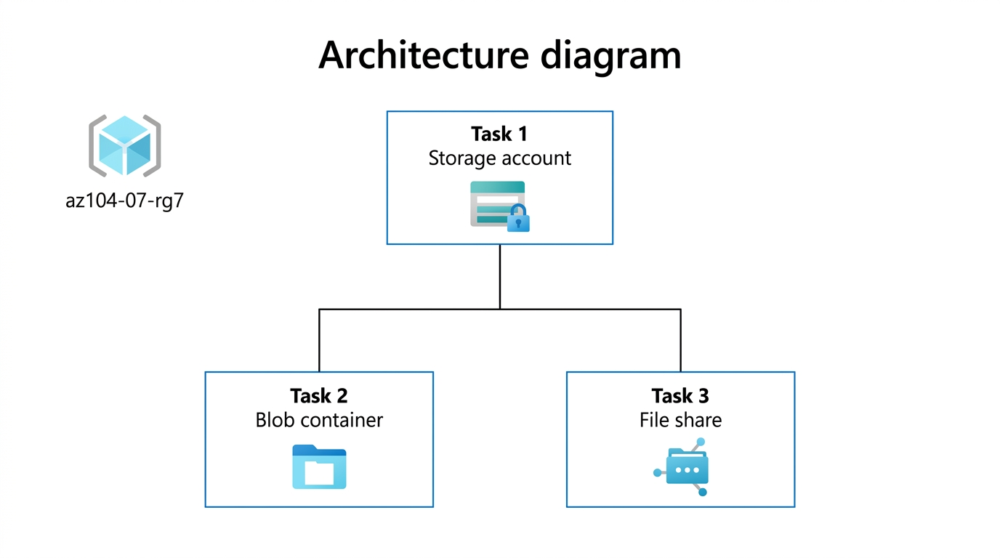
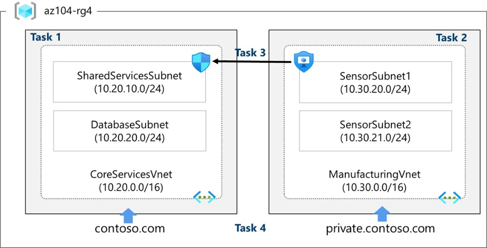
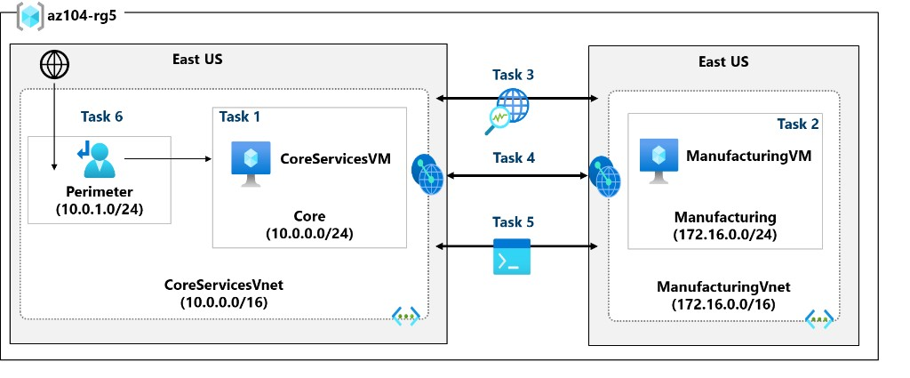

1. Manage Azure Identities and Governance
Exam weight: 20–25%
Describe the core architectural components of Azure
What Azure offers
Azure is a continually expanding set of cloud services to meet business challenges. You can build, manage, and deploy applications on a global network using your preferred tools and frameworks. Azure offers limitless innovation (intelligent apps with AI and advanced services), unified platform management (infrastructure, data, analytics, and AI in one place), and trust (security and compliance). Azure provides more than 100 services—from running existing apps on VMs to AI/ML (vision, hearing, speech), storage that scales, and solutions that require cloud scale. Many teams start by moving apps to VMs, but the cloud enables much more (e.g. dynamic storage, bots, mixed reality).
Get started with Azure accounts
To use Azure services you need an Azure subscription. Create an Azure account (e.g. on the Azure website or through a Microsoft representative or Cloud Solution Provider partner); a subscription is created for you. You can create additional subscriptions (e.g. one per department: dev, marketing, sales). Resources are created within subscriptions.
Azure free account: Free access to popular Azure products for 12 months; a credit for the first 30 days; 25+ products always free. Sign up with phone, credit card (verification only—no charge until you upgrade), and a Microsoft or GitHub account. Good for exploring.
Azure free student account: Free access to certain services for 12 months; credit for 12 months; free developer tools. For students; $100 credit; no credit card required. Many Learn exercises are bring your own subscription (BYOS); complete cleanup steps to avoid unexpected costs.
Azure physical infrastructure
Azure’s physical infrastructure starts with datacenters (facilities with racks, power, cooling, networking). Datacenters are not directly accessible; they are grouped into Regions and Availability Zones for resiliency and reliability.
Regions — A geographical area containing one or more datacenters networked with low latency. When you deploy a resource you typically choose a region. Some services or VM features are only in certain regions; some services are global (no region selection), e.g. Microsoft Entra ID, Azure Traffic Manager, Azure DNS.
Availability Zones — Physically separate datacenters within a region. Each zone has independent power, cooling, and networking; if one zone fails, others continue. Connected by high-speed fiber. Minimum of three zones in all availability-zone–enabled regions; not all regions support them. Use for VMs, managed disks, load balancers, SQL Database. Categories: zonal (pinned to one zone), zone-redundant (replicated across zones by the platform), non-regional (available from geographies, resilient to zone and region outages).
Region pairs — Most regions are paired with another in the same geography (e.g. US, Europe, Asia), at least 300 miles apart. Enables replication and reduces impact of disasters, outages, or network failures; one region can fail over to its pair. Not all services auto-replicate or fail over—customer must configure where required. Benefits: during a broad Azure outage, one region per pair is prioritized for restore; planned updates roll out to paired regions one at a time; data stays in the same geography (except Brazil South). Most pairs are bidirectional (e.g. West US and East US back each other up); some are one-direction (e.g. West India’s secondary is South India, but South India’s secondary is Central India; Brazil South’s secondary is South Central US).
Sovereign regions — Isolated instances of Azure for compliance or legal reasons. Examples: US DoD Central, US Gov Virginia, US Gov Iowa (physical and logical isolation for U.S. government; screened personnel; extra compliance); China East, China North (via Microsoft–21Vianet partnership; Microsoft does not directly operate the datacenters).
Azure management infrastructure
Management infrastructure includes resources, resource groups, subscriptions, and management groups.
Resources and resource groups — A resource is the basic building block (VMs, virtual networks, databases, cognitive services, etc.). You must place each resource in a resource group. A resource can only be in one resource group at a time; some resources can be moved. Resource groups cannot be nested. Actions on a resource group apply to all resources in it (delete, access control). Use resource groups to organize by lifecycle (e.g. delete entire dev environment) or by access (e.g. assign access at resource group level).
Subscriptions — A unit of management, billing, and scale. They organize resource groups and facilitate billing. A subscription gives authenticated, authorized access to Azure and allows provisioning. A subscription links to an Azure account (identity in Microsoft Entra ID or a trusted directory). An account can have multiple subscriptions. Two boundary types: billing boundary (how the account is billed; separate invoices per subscription); access control boundary (access policies at subscription level; e.g. different departments, different policies). Create additional subscriptions to separate environments (dev/test, compliance), organizational structure, or billing/cost tracking.
Management groups — A scope above subscriptions. Organize subscriptions into management groups and apply governance (policies, RBAC). Subscriptions inherit conditions from their management group (as resource groups inherit from subscriptions). Enables enterprise-scale management. Use cases: apply a policy (e.g. limit VM regions) to a management group so all descendant subscriptions inherit it; assign RBAC at the management group once for access to multiple subscriptions. Limits: up to 10,000 management groups per directory; tree depth up to six levels (excluding root and subscription); each management group and subscription has only one parent.
Users and groups
Microsoft Entra ID overview
Microsoft Entra ID is a Microsoft-managed PaaS directory service in the cloud (not IaaS; you don’t run or maintain it). It provides identity and access management for cloud and hybrid environments. Unlike AD DS (on-prem, domain controllers, GPOs), Entra ID is built for web-based apps and cloud services, with features like MFA, identity protection, and self-service password reset.
Use Entra ID to: configure access to applications; SSO to SaaS apps; manage users and groups and provisioning; federation; identity management; detect irregular sign-in activity; MFA; extend on-prem AD to the cloud; Application Proxy; Conditional Access.
Licensing: A Free tier is included with every new Azure subscription (and with Microsoft 365/Intune). Basic and Premium add advanced features. Creating an Azure subscription with a Microsoft account gives you a default Entra tenant named Default Directory.
Microsoft Entra tenants
Entra ID is multi-tenant by design; each directory instance is isolated. A tenant is an organization’s Entra instance (or technically, one Entra directory). An Azure subscription is linked to exactly one Entra tenant at a time; that link lets you grant RBAC on the subscription to users, groups, and apps in that tenant. The same tenant can be associated with multiple Azure subscriptions.
Each tenant gets a default DNS domain: <unique-prefix>.onmicrosoft.com. You can add custom domains. The tenant is the security boundary and container for users, groups, and applications.
Microsoft Entra schema
Fewer object types than AD DS: no computer class (there is a device class; join process differs from AD DS). No OU class—no custom hierarchy of containers; use group membership instead. Schema is extensible and reversible.
No traditional GPOs; Entra uses modern management. Strength: directory services, storing/publishing user/device/application data, authentication and authorization.
Applications: Application = app definition; servicePrincipal = instance of that app in a tenant. One app can be used in many tenants by creating a service principal per tenant (created when you register the app in that tenant).
Entra ID vs AD DS
AD DS (on-prem): Hierarchical X.500-based directory; DNS for locating domain controllers; LDAP for query/management; Kerberos for authentication; OUs and GPOs for management; computer objects (domain-joined machines); trusts between domains. Part of the Windows Active Directory suite (AD CS, AD LDS, AD FS, AD RMS). You can run AD DS on Azure VMs for scale/availability—that does not use Entra ID. When deploying AD DS on an Azure VM, use separate data disks (not C:) for the AD database, logs, and sysvol; set Host Cache Preference = None for those disks.
Microsoft Entra ID (cloud): Identity solution for internet-based apps (HTTP/HTTPS). Multi-tenant directory; flat user/group structure—no OUs or GPOs. No LDAP—uses REST APIs over HTTP/HTTPS. No Kerberos—uses SAML, WS-Federation, OpenID Connect for authentication and OAuth for authorization. Includes federation; many third-party services (e.g. Facebook) federate with Entra ID.
Entra ID as directory for cloud apps
Cloud services (Microsoft 365, Intune, etc.) need a cloud directory for authentication. Using one Entra tenant for all Microsoft cloud services (Microsoft 365, Azure, Dynamics 365, Intune) gives a single identity layer. Entra ID provides centralized auth for Azure apps, including with other identity providers or on-prem AD DS, and SSO for Microsoft and third-party apps (e.g. Facebook, Google, Yahoo).
For custom apps, you can enable Microsoft Entra authentication for Azure App Service Web Apps from the Authentication/Authorization blade in the Azure portal: select the Entra tenant so only users in that directory can access the app. You can set different authentication options per deployment slot.
Create, configure, and manage identities
Create, configure, and manage users
Every user who needs access to Azure resources needs an Azure user account. A user account holds the information needed to authenticate the user at sign-in. After authentication, Microsoft Entra ID issues an access token used to authorize the user and determine which resources they can access and what actions they can perform.
You manage user objects from the Microsoft Entra ID dashboard in the Azure portal. You work with one directory at a time; use the Directory + Subscription panel or the Switch directory button in the toolbar to change directories.
View users
To view users: go to Identity → Users → All Users. The User Type column shows whether each user is a Member or a Guest.
User identity types
Microsoft Entra ID defines users in three main ways:
- Cloud identities — Exist only in Microsoft Entra ID. Examples: administrator accounts and users you manage directly. Source: Microsoft Entra ID or External Microsoft Entra directory (user lives in another Entra tenant but needs access to resources in this directory). When removed from the primary directory, these accounts are deleted.
- Directory-synchronized identities — Exist in on-premises Active Directory. Microsoft Entra Connect synchronizes them into Azure. Source: Windows Server AD.
- Guest users — Exist outside Azure. Examples: accounts from other cloud providers and Microsoft accounts (e.g. Xbox LIVE). Source: Invited user. Use for external vendors or contractors; remove the account when access is no longer needed.
Manage external users
In the exam and Microsoft Learn, external users are typically guest users (B2B collaboration): users from another organization or identity provider who need access to your apps and resources. Manage them via Identity → Users → All users (filter by User type = Guest) or External Identities → All external users in the Microsoft Entra admin center. Invite guests via email; they redeem the invitation and sign in with their own credentials. Remove or revoke guest access when it is no longer needed to keep access accurate and auditable.
Allow users to reset their password with Microsoft Entra self-service password reset (SSPR)
Self-service password reset (SSPR) lets users reset their password in a browser or from the Windows sign-in screen when they are not signed in, forgot their password, or it is expired. They regain access to Azure, Microsoft 365, and other apps that use Microsoft Entra ID. SSPR reduces help-desk load and productivity loss. Any signed-in user can change their password in any Entra edition; reset when not signed in requires SSPR (see licensing below).
How SSPR works: User goes to the password-reset portal or selects “Can’t access your account” on sign-in. Steps: (1) Localization — page language from browser locale; (2) Verification — user enters username and passes CAPTCHA; (3) Authentication — user proves identity with required method(s); (4) Password reset — enter and confirm new password; (5) Notification — confirmation to the user. You can customize the experience (e.g. company logo).
Authentication methods for reset: Enable two or more so users can choose. Azure supports six methods:
| Method | How to register | How to authenticate |
|---|---|---|
| Mobile app notification | Install and register Microsoft Authenticator on MFA setup page. | Approve or deny notification from Azure. |
| Mobile app code | Same as above. | Enter code from the app. |
| Provide external email (not Azure/M365). | Enter code sent to that email. | |
| Mobile phone | Provide mobile number. | SMS code or automated call. |
| Office phone | Provide non-mobile number. | Automated call; press #. |
| Security questions | Select questions and save answers. | Answer the questions. |
You can require a minimum of one or two methods to reset. For security questions, configure minimum questions to register and minimum to answer correctly. Users are “registered for SSPR” when they have set up the required number of methods. Recommendations: Prefer mobile app notification or code; enable email or office phone for users without mobile devices; avoid mobile phone (SMS fraud); use security questions only with at least one other method. Administrator accounts: A strong two-method policy always applies; security questions are not available for admin roles.
Notifications: (1) Notify users on password reset (to primary/secondary email)—helps detect unauthorized resets. (2) Notify all admins when other admins reset their password.
License requirements: Changing password while signed in is available in all editions. SSPR (reset when not signed in) requires Microsoft Entra ID P1 or P2, or Microsoft 365 Apps for business or Microsoft 365. Password writeback to on-premises Active Directory (hybrid) requires Entra ID P1 or P2 or Microsoft 365 Apps for business.
SSPR deployment (hybrid): Password writeback can use Microsoft Entra Connect or cloud sync; you can use both for different user sets (e.g. existing domain via Connect, merged users via cloud sync). Cloud sync can improve availability by not relying on a single Connect instance.
Configure SSPR: In Azure portal go to Microsoft Entra ID → Password reset. Prerequisites: Entra org with P1 or P2 (or trial), account with Authentication Policy Administrator, test user (non-admin) in a security group. Scope: None (default, no one); Selected (only members of a chosen security group—use for pilot); All (all users). Configure: Properties — enable SSPR, choose All or Selected (and the group); Authentication methods — require one or two methods, select allowed methods; Registration — require registration at next sign-in, how often to reconfirm; Notifications — notify user and/or admins; Customization — help link (email or URL).
Create, configure, and manage groups
A Microsoft Entra group organizes users and simplifies permission management. Resource owners (or directory owners) assign access permissions to the whole group instead of to each user. Groups define a security boundary; you add or remove users to grant or deny access with minimal effort. Entra ID also supports rule-based membership (e.g. by department or job title).
Group types
Microsoft Entra ID supports two group types:
- Security groups — Most common. Used to manage member and computer access to shared resources. Create a security group for a specific policy and assign permissions to all members at once instead of per user. Requires a Microsoft Entra administrator.
- Microsoft 365 groups — Enable collaboration: shared mailbox, calendar, files, SharePoint site, etc. Can include people outside the organization. Available to both users and admins.
View available groups
View all groups via Identity → Groups in the Microsoft Entra admin center. A new Entra ID deployment has no groups by default.
Membership type
Membership type defines how members are added:
- Assigned — Members are added and maintained manually.
- Dynamic — Members are added by rules (dynamic group). The group is still a security group or Microsoft 365 group; only membership is rule-based.
Dynamic groups
In a dynamic group, membership is recalculated by a formula each time the group is used. Any directory object whose attributes match the group’s filter is included. If a user’s properties are changed to match the filter, they can inadvertently become a member. Well-defined, consistent account provisioning reduces this risk. Dynamic groups require Entra ID P1 or P2.
Configure and manage device registration
IT must balance user productivity (any device, anywhere) with protecting organizational assets. Microsoft Entra ID provides device identity so you can manage and secure access; tools like Microsoft Intune build on that identity for compliance and configuration. Entra ID enables SSO to devices, apps, and services.
Microsoft Entra registered devices — For BYOD and mobile. The device is registered to Entra ID; the user signs in with a local/personal account and attaches an organizational account for work resources. No organizational sign-in to the device itself. Use Conditional Access and MDM (e.g. Intune) to require compliant devices. Registration can happen when accessing a work app for the first time or via Windows Settings. Typical scenario: user accesses email and HR tools from a home PC; after registering the device and meeting Intune compliance, Conditional Access grants access.
| Aspect | Entra registered | Entra joined | Hybrid Entra joined |
|---|---|---|---|
| Definition | Registered to Entra ID; no org account required to sign in to device | Joined only to Entra ID; org account required to sign in | Joined to on-prem AD and registered with Entra ID |
| Audience | BYOD, mobile | Cloud-only or hybrid orgs | Hybrid orgs with existing on-prem AD |
| Ownership | User or org | Organization | Organization |
| OS | Windows 10/11, iOS, Android, macOS | Windows 10/11 (not Home) | Windows 7/8.1/10/11, Server 2008 R2–2019 |
| Management | MDM (e.g. Intune) | MDM or Configuration Manager (co-management) | Group Policy, Configuration Manager, or co-management with Intune |
| Key capabilities | SSO to cloud resources, Conditional Access | SSO cloud + on-prem, Conditional Access, self-service password reset, Windows Hello PIN reset | SSO cloud + on-prem, Conditional Access, self-service password reset, Windows Hello for Business |
Microsoft Entra joined devices — For cloud-first or cloud-only organizations. Users sign in to the device with an organizational Entra account. Enables SSO to cloud and on-premises resources (when on the org network). Join via OOBE, bulk enrollment, or Windows Autopilot. Use when: transitioning to cloud + Intune, managing tablets/phones, users mainly need Microsoft 365/SaaS, managing seasonal workers/contractors/students in Entra, or remote branches with limited on-prem infrastructure. Not available on Windows 10/11 Home.
Hybrid Microsoft Entra joined devices — For orgs with on-premises AD that also want Entra benefits. Devices are domain-joined to AD and registered with Entra ID. Use when: you have Win32 apps that need AD machine auth, you rely on Group Policy, you use existing imaging, or you must support Windows 7/8.1. Managed via Group Policy and/or Configuration Manager (standalone or co-management with Intune).
Device writeback — In hybrid setups with Microsoft Entra Connect, devices exist in Entra ID; on-prem AD has no visibility by default. Device writeback copies Entra-registered device objects into the on-prem AD container Registered Devices. Use it when: you need on-prem conditional access (e.g. an app behind ADFS that checks device identity via claim rules), or when using Windows Hello for Business in hybrid or federated scenarios (WHFB requires device writeback).
Manage licenses
Microsoft paid cloud services (Microsoft 365, Enterprise Mobility + Security, Dynamics 365, etc.) require user-level licenses. Microsoft Entra ID stores license assignment state. Licenses are managed via management portals (Office or Azure) or PowerShell. Previously, licenses could only be assigned per user, which made large-scale changes (e.g. department moves, joiners/leavers) cumbersome and often required custom PowerShell scripts.
Group-based licensing — Assign one or more product licenses to a group; Entra ID assigns licenses to all members, adds licenses when users join the group, and removes them when they leave. This reduces or eliminates per-user license automation via PowerShell.
License requirements for group-based licensing:
- Paid or trial Microsoft Entra ID Premium P1 or greater, or Office 365 Enterprise E3 or greater.
- You must have enough licenses for every unique member of any group that has licenses assigned. You don’t have to assign each member individually, but the tenant must have at least one license per unique member (e.g. 1,000 members in licensed groups → 1,000 licenses required).
Features:
- Licenses can be assigned to any security group (synced from on-prem via Entra Connect, cloud-only, or dynamic groups).
- When assigning a product to a group, you can disable specific service plans (e.g. assign Microsoft 365 but disable Yammer until the org is ready).
- Supported: all Microsoft 365 products, Enterprise Mobility + Security, Dynamics 365, and other user-level licensed Microsoft cloud services.
- Group-based licensing is available through the Microsoft 365 admin center (not Azure portal). License changes from membership updates are typically effective within minutes.
- A user can be in multiple groups with licenses and can also have directly assigned licenses. The final state is the combination of all; duplicate product assignment consumes the license only once.
- If Entra ID cannot assign a license (e.g. not enough licenses, conflicting services), administrators can see which users were not fully processed and take corrective action.
- Usage location must be set in the user profile before assignment—some services are not available in all locations. For group assignment, users without a usage location inherit the directory location; set usage location at user creation when you have users in multiple locations.
Create custom security attributes
Custom security attributes in Microsoft Entra ID are business-specific attributes (key-value pairs) you define and assign to Microsoft Entra objects. Use them to store information, categorize objects, or enforce fine-grained access control over specific Azure resources.
Why use custom security attributes:
- Extend user profiles (e.g. Employee Hire Date, Hourly Salary) and control visibility (e.g. only administrators can see Hourly Salary).
- Categorize many applications for a filterable, auditable inventory.
- Grant users access to Azure resources (e.g. Storage blobs) based on attribute values (e.g. project membership).
What you can do: Define tenant-specific attributes; add them on users, applications, Microsoft Entra resources, or Azure resources; manage and filter Entra objects with queries; use attributes for attribute-based access control (who can access what).
Features:
- Available tenant-wide; each attribute can include a description.
- Data types: Boolean, integer, string.
- Single value or multiple values per attribute.
- Values can be free-form (user-defined) or predefined (allowed list).
- Can be assigned to directory-synchronized users from on-premises Active Directory.
Explore automatic user creation
Automatic user provisioning creates and updates user (and group) accounts in Microsoft Entra ID or target applications based on a source system—for example, an HCM (Human Capital Management) system. When employees are added or updated in HR, accounts and attributes are synchronized; when they leave or change role, accounts can be updated or deprovisioned. Keeping identity systems in sync with HR reduces stale accounts and access risk.
SCIM (System for Cross-Domain Identity Management) is an open standard for automating the exchange of user identity information between identity domains and IT systems. Microsoft Entra ID uses SCIM 2.0 for automatic provisioning: the Microsoft Entra Provisioning Service connects to the application’s SCIM endpoint, uses the SCIM user object schema and REST APIs, and automates provisioning and deprovisioning of users and groups. If users are automatically deprovisioned from Entra ID when removed from the HR system, you reduce the window for unauthorized access from orphaned accounts.
Components:
- HCM system — Applications and technologies that support HR processes across the employee lifecycle (hire, role change, leave). Source of truth for who should have access.
- Microsoft Entra Provisioning Service — Uses SCIM 2.0; connects to the application’s SCIM endpoint and uses the SCIM user/group schema and REST APIs to create, update, and remove users and groups in the target system.
- Microsoft Entra ID — User repository; manages the lifecycle of identities and their entitlements. Can be the source (provisioning out to apps) or the target (provisioned from HCM).
- Target system — Application or system that exposes a SCIM endpoint and works with Microsoft Entra provisioning to enable automatic provisioning and deprovisioning of users and groups.
Access to Azure resources
Azure Cloud Shell
Browser-based shell to manage Azure from any device. Access via https://shell.azure.com, the Azure portal, or Learn code snippets. Authenticate with your Azure subscription; no local install required.
- Sessions: A temporary VM is allocated per session with the latest PowerShell and Bash. Sessions end after 20 minutes of inactivity. CloudDrive files persist across sessions.
- CloudDrive: Persist scripts and files; same files available from any device/session. You can also map an Azure Storage File Share (tied to a region) to work with share contents in Cloud Shell.
- Editor: Use the { } icon in the browser or run
code <filename>(e.g.code temp.txt).codeworks in Classic mode (More → Settings → Go to Classic version).
Preinstalled tools (examples): Azure CLI, AzCopy, Azure Functions CLI, git, Docker/Kubectl/Helm, Terraform, Ansible, MySQL/PostgreSQL/sqlcmd, vim/nano/emacs, npm/pip, and more.
When to use Azure Cloud Shell
Use Cloud Shell when you:
- Need a secure command-line session from any browser (no plug-ins or local install).
- Want to persist files between sessions (CloudDrive).
- Prefer Bash or PowerShell to manage Azure and need the built-in editor for scripts.
Do not use Cloud Shell when you:
- Run long-running scripts or leave a session idle more than 20 minutes—session disconnects without warning and state is lost.
- Need admin/sudo inside the shell (not supported).
- Need to install custom tools not in the preconfigured environment—use a custom VM or container instead.
- Need storage in multiple regions—Cloud Shell is tied to one region; you’d need to back up/sync content across regions yourself.
- Need multiple concurrent sessions—only one Cloud Shell instance at a time (not suitable for parallel work across subscriptions/tenants).
What is Azure RBAC?
Microsoft Entra ID and Azure RBAC work together so that when people leave the organization they lose access to cloud resources, and so you can balance team autonomy with central governance (e.g. teams manage VMs while you control networks). Each Azure subscription is associated with one Microsoft Entra directory; users, groups, and applications in that directory are used for SSO and access management. With Microsoft Entra Connect, on-prem AD accounts can manage Azure subscriptions; disabling an on-prem account removes access to connected Azure subscriptions.
Azure RBAC is an authorization system built on Azure Resource Manager that provides fine-grained access management. You grant the access users need—e.g. one user manages VMs in a subscription, another manages SQL databases. You grant access by assigning an Azure role to users, groups, or applications at a scope: management group, subscription, resource group, or single resource. A role at a parent scope grants access to child scopes (e.g. access to a resource group grants access to all resources in it). A resource belongs to only one resource group; a resource group to only one subscription; a subscription to one Entra tenant.
What can you do with Azure RBAC?
- Allow one user to manage VMs and another to manage virtual networks in a subscription.
- Allow a DBA group to manage SQL databases in a subscription.
- Allow a user to manage all resources in a resource group (VMs, websites, subnets).
- Allow an application to access all resources in a resource group.
In the Azure portal, use the Access control (IAM) pane on management groups, subscriptions, resource groups, or resources to view who has access and to grant or remove access.
How does Azure RBAC work?
Access is controlled by role assignments. A role assignment has three elements: security principal (who), role definition (what), and scope (where).
1. Security principal (who) — The user, group, or application (service principal) you grant access to.
2. Role definition (what) — A collection of permissions (often called a role). Lists operations the role can perform (read, write, delete). Can be broad (e.g. Owner) or specific (e.g. Virtual Machine Contributor).
Built-in roles (examples):
| Role | Description |
|---|---|
| Owner | Full access to all resources, including the right to delegate access to others. |
| Contributor | Create and manage all types of Azure resources; cannot grant access to others. |
| Reader | View existing Azure resources. |
| User Access Administrator | Manage user access to Azure resources. |
If built-in roles are insufficient, create custom roles.
3. Scope (where) — The level at which access applies: management group, subscription, resource group, or resource. Scopes have a parent-child relationship; access at a parent scope is inherited by children. Example: Contributor at subscription scope applies to all resource groups and resources in that subscription.
Role assignment — Binding a role to a security principal at a scope. Create an assignment to grant access; remove it to revoke access.
Azure RBAC is an allow model
Azure RBAC is allow-based: assignments grant permissions (read, write, delete). Multiple assignments are additive (e.g. read from one assignment + write from another = read and write). NotActions define operations to exclude from a role; effective permissions = Actions minus NotActions. For example, Contributor has * in Actions (all control-plane operations) and uses NotActions to exclude: deleting role assignments, creating role assignments, granting User Access Administrator at tenant scope, and blueprint artifact create/delete. The result is the effective Contributor permission set.
Compare Microsoft Entra ID P1 and P2
Microsoft Entra ID P1 or P2 provides extra functionality compared to Free and Office 365 editions. Premium tiers require additional cost per user. You can license P1/P2 as a standalone add-on or as part of Microsoft Enterprise Mobility + Security (which also includes Azure Information Protection and Intune). Microsoft offers a free trial for Entra ID P2 to experience full functionality.
Microsoft Entra ID P1 features
- Self-service group management: Users can create and manage groups; request to join groups; group owners approve requests and maintain membership.
- Advanced security reports and alerts: Detailed logs, ML-based anomaly and inconsistent access-pattern reports to improve access security and respond to threats.
- Multi-factor authentication (MFA): Full MFA for on-premises apps (VPN, RADIUS, etc.), Azure, Microsoft 365, Dynamics 365, and Entra gallery apps. Does not cover non-browser apps (e.g. Outlook).
- Microsoft Identity Manager (MIM) licensing: MIM integrates with Entra ID P1/P2 for hybrid identity; bridges on-prem stores (AD DS, LDAP, Oracle, etc.) with Entra ID for consistent LOB and SaaS experiences.
- Enterprise SLA 99.9%: Same as Entra Basic.
- Password reset with writeback: Self-service password reset aligned with on-premises Active Directory password policy.
- Cloud App Discovery: Discovers frequently used cloud applications.
- Conditional Access: By device, group, or location for critical resources.
- Microsoft Entra Connect Health: Operational insight via alerts, performance counters, usage patterns, and configuration in the Entra Connect Health portal.
Microsoft Entra ID P2 – additional features
- Microsoft Entra ID Protection: User-risk and sign-in-risk policies; review user behavior and flag users for risk; enhanced monitoring and protection.
- Microsoft Entra Privileged Identity Management (PIM): Extra security for privileged users. Define permanent and temporary administrators; policy workflow activates when someone uses administrative privileges.
| Feature | P1 | P2 |
|---|---|---|
| Self-service group management | ✓ | ✓ |
| Advanced security reports / alerts | ✓ | ✓ |
| MFA (full) | ✓ | ✓ |
| MIM licensing | ✓ | ✓ |
| 99.9% SLA | ✓ | ✓ |
| Password reset with writeback | ✓ | ✓ |
| Cloud App Discovery | ✓ | ✓ |
| Conditional Access (device, group, location) | ✓ | ✓ |
| Entra Connect Health | ✓ | ✓ |
| Entra ID Protection | — | ✓ |
| Privileged Identity Management (PIM) | — | ✓ |
Examine Microsoft Entra Domain Services
Overview
Many LOB apps run on domain-joined devices and use AD DS for authentication and Group Policy for management. When moving these apps to Azure, you need authentication options. Alternatives include: a site-to-site VPN (auth traffic crosses the VPN) or replica domain controllers as Azure VMs (replication crosses the VPN; auth stays in the cloud). Both add cost and management.
Microsoft Entra Domain Services is a managed alternative. It runs as part of Microsoft Entra ID P1 or P2 and provides domain services—Group Policy, domain join, Kerberos—to your Entra tenant. It is compatible with on-premises AD DS, so you don’t need to deploy or manage domain controllers in the cloud.
With Microsoft Entra Connect, users can use the same organizational credentials in on-prem AD DS and in Entra Domain Services. You can also use Entra Domain Services as a cloud-only service (no on-prem AD DS): create an Entra tenant, enable Entra Domain Services, and use a virtual network so on-prem resources can use the managed domain services.
Benefits
- No need to manage, update, or monitor domain controllers.
- No need to deploy or manage Active Directory replication.
- No Domain Admins or Enterprise Admins groups for the managed domain.
Limitations
- Only the base computer Active Directory object is supported.
- Schema cannot be extended for the Entra Domain Services domain.
- OU structure is flat; nested OUs are not supported.
- There is a built-in GPO for computer and user accounts.
- Built-in GPOs cannot target OUs. WMI filters and security-group filtering are not supported.
Use cases
Migrate applications that use LDAP, NTLM, or Kerberos from on-prem to the cloud. Run apps such as SQL Server or SharePoint Server on Azure VMs without domain controllers in the cloud or a VPN to on-prem.
Enablement and pricing
Enable Microsoft Entra Domain Services via the Azure portal. Billing is per hour based on directory size.
Subscriptions and governance
Cloud Adoption Framework and cloud governance
The Microsoft Cloud Adoption Framework for Azure provides end-to-end guidance for cloud adoption. Cloud governance is the management of cloud usage—regulatory compliance, security, operations, cost, data, resource management, and AI. The Govern methodology has five steps: (1) Build a governance team; (2) Assess cloud risks; (3) Document cloud governance policies; (4) Enforce policies with automated tools and manual oversight; (5) Monitor usage and compliance. Iterate on steps 2–5 over time. Key considerations: business risk and tolerance, policy and compliance (risk → policy statements), and process (monitoring violations). Five core disciplines: Cost management, Security baseline, Resource consistency, Identity baseline, Deployment acceleration.
Azure Policy as primary governance tool
Azure Policy is Azure’s primary governance tool. It enforces organizational standards and assesses compliance at scale across current and new resources. Benefits: centralized management, aggregated compliance dashboard, prevention of misconfigurations, bulk and automatic remediation, integration with Azure DevOps pipelines. Examples: allow only certain regions or VM sizes; enforce tags; require MFA; require diagnostic logs to Log Analytics; enforce geo-replication. Policy evaluates resources and can prevent noncompliant resources from being created or remediate existing resources (e.g. add missing tags). You can exempt specific resources from a policy. Design policy to balance control and stability with speed and productivity.
Hierarchy for governance
Four levels: Management groups → Subscriptions → Resource groups → Resources. Settings applied at a level apply to that scope and below; lower levels inherit. Policy assigned at a management group applies to all subscriptions (and their resource groups and resources) in that group.
Azure Resource Manager and Azure Policy
Control plane — Manages resources in the subscription. Azure Resource Manager (ARM) manages control plane operations; Azure Policy is integrated with ARM. Requests (portal, PowerShell, CLI, REST, SDKs) go through ARM (auth, RBAC, then Policy). Data plane — Direct interaction with resource data (e.g. storage blob, SQL query, Key Vault secret). Data plane is handled by the resource provider; Policy can enforce that resources are compliant. Policy supports Resource Provider modes for data-plane–aware policies (e.g. Microsoft.Kubernetes.Data, Microsoft.KeyVault.Data, Microsoft.Network.Data, Microsoft.ManagedHSM.Data, Microsoft.DataFactory.Data, Microsoft.MachineLearningServices.v2.Data). Greenfield: policy exists first; create/update request is evaluated by Policy (after RBAC). Brownfield: resources exist first; new policy is applied via compliance scan (automatic every 24 hours or manual az policy state trigger-scan).
Azure Policy resources
Definitions — Describe compliance conditions and the effect when the condition is met. Stored at a definition location (management group or subscription); that location sets where the policy/initiative can be assigned. Scope = management groups, subscriptions, resource groups, resources.
Initiatives (policy sets) — Group multiple policy definitions into one assignable unit. Simplify assignment and management; track compliance for a larger goal (e.g. regulatory framework). Built-in initiatives = collections from Azure Resource Providers (compliance frameworks, security best practices). Custom initiatives = policies you define; custom initiative = group of custom definitions. JSON used for initiative definition structure.
Assignments — Assign a definition or initiative to a scope (management group, subscription, or resource group). Optional: resource selectors (gradual rollout by location/type), overrides (change effect at assignment), enforcementMode (Disabled = “what-if”: evaluate but do not enforce effect), excluded scopes, noncompliance messages, parameters. For deployIfNotExists, assign a managed identity (system or user-assigned) for remediation.
Exemptions — Exempt a resource or hierarchy from evaluation. Exempt resources count toward compliance but are not evaluated (temporary waiver). Categories: Mitigated (intent met another way), Waiver (temporary acceptance of noncompliance).
Attestations — For manual-effect policies: set compliance state of resources/scopes via attestations; one attestation per resource per manual policy assignment.
Remediations — Bring noncompliant resources into compliance for modify or deployIfNotExists assignments. Remediation task runs the fix; new/updated resources matching deployIfNotExists/modify can be auto-remediated.
Azure Policy definitions (anatomy)
Policy = condition (if) + effect (then). Written in JSON. Key elements: displayName, description, policyType (BuiltIn, Custom, Static), mode (e.g. Indexed for ARM; Resource Provider modes for data-plane policies), parameters, policyRule (if + then).
Logical operators in if: not, allOf (and), anyOf (or); can be nested. Conditions use field, value, or count with operators (equals, notEquals, in, notIn, containsKey, less, greater, exists, etc.). Policy functions (e.g. addDays, field, requestContext().apiVersion, policy(), ipRangeContains, current() in count) add logic.
| Effect | Description |
|---|---|
| deny | Block noncompliant request (synchronous). |
| modify | Add/update/remove properties or tags (synchronous). |
| append | Add fields (synchronous; mostly superseded by modify). |
| audit | Log warning in activity log; do not block (asynchronous). |
| auditIfNotExists | Audit when related resource does not exist (asynchronous). |
| deployIfNotExists | Run template deployment when condition met (asynchronous). |
| manual | Compliance set via attestations. |
| disabled | Deactivate policy; assignment not active. |
Evaluation and compliance
Triggers: New or updated assignment; resource deployed/updated; subscription moved in hierarchy; exemption created/updated/deleted; machine configuration provider update; on-demand scan.
Timing: Full compliance scan runs automatically every 24 hours. Manual scan: az policy state trigger-scan. New assignment can take up to ~30 minutes to apply (ARM cache); sign out/in to refresh. Scan duration depends on definition complexity, number of policies, scope size, and system load (scans are low priority).
Compliance states: Compliant, Non-compliant, Error, Conflicting, Protected (denyAction), Exempted, Unknown (manual). Rank order determines overall state. Compliance % = (Compliant + Exempt + Unknown) / total resources.
enforcementMode (assignment property): Enabled (default) = effect enforced; DoNotEnforce = evaluate but do not enforce (what-if), no activity log for effect—remediation tasks still allowed for deployIfNotExists. Use to test before enabling.
Safe deployment and reacting to state changes
Best practices: (1) Assign new policies with enforcementMode Disabled first; check compliance and impact, then enable. (2) Deploy in rings (e.g. test → dev → production subsets) to limit impact. Treat policy as code (source control, test changes).
Reacting to state changes: Azure Policy events (e.g. compliance change) are published to Azure Event Grid. Subscribe and route to handlers (Azure Functions, Logic Apps, webhook, custom HTTP). Event Grid handles retry and dead-letter delivery.
2. Implement and Manage Storage
Exam weight: 15–20%
Configure Azure Storage security
Introduction
Azure Storage provides security capabilities to build secure applications. This module covers securing sensitive and personal data for internal and external users and granting secure access. Learning objectives: Configure shared access signature (SAS), including URI and SAS parameters; configure Azure Storage encryption; implement customer-managed keys; recommend opportunities to improve storage security. Exam (Implement and manage storage 15–20%): Secure storage — generate SAS tokens; manage access keys; configure stored access policies. Prerequisites: Familiarity with the Azure portal.
Review Azure Storage security strategies
Common strategies: encryption, authentication, authorization, user access control (credentials, file permissions, private signatures). Apply defense in depth across storage features.
Encryption at rest: Storage Service Encryption (SSE) with 256-bit AES encrypts all data written to Azure Storage; decryption on read is automatic, no extra charge or performance impact. Includes VHD encryption (Azure Disk Encryption: BitLocker for Windows, dm-crypt for Linux).
Encryption in transit: Use HTTPS; enable secure transfer required on the storage account so HTTP is refused and SMB 3.0 is required for file share mounts.
Encryption models: Server-side with service-managed keys, customer-managed keys in Key Vault, or customer-managed keys on customer-controlled hardware; client-side with keys managed on-premises or elsewhere.
Authorize requests: Prefer Microsoft Entra ID with managed identities for blob, queue, and table data; better security and ease of use than Shared Key. RBAC — assign roles scoped to the storage account so only intended users/apps have access. Storage analytics — logging for tracing requests, usage trends, and diagnostics. See the Microsoft storage cloud security benchmark for recommendations.
| Strategy | Description |
|---|---|
| Microsoft Entra ID | Cloud identity and access management; fine-grained access via RBAC for users, groups, applications. |
| Shared Key | Account access keys and parameters produce an encrypted signature in the Authorization header. |
| Shared access signatures (SAS) | Delegate access to a specific resource with specified permissions and time interval. |
| Anonymous access | Optional public read at container or blob level; no authorization for read requests. |
Create shared access signatures
A shared access signature (SAS) is a URI that grants restricted access to storage resources without exposing account keys. Give a SAS to clients for access for a limited time. Types: User delegation SAS — secured with Microsoft Entra credentials and SAS permissions; supported for Blob and Data Lake. Account-level SAS — access to anything a service-level SAS can allow plus other resources (e.g. create file systems). Service-level SAS — access to specific resources (e.g. list files, download a file). Stored access policy — server-side grouping of SASs with additional restrictions; use where possible to revoke without regenerating account keys.
Risk mitigation: Always use HTTPS for creation and distribution (avoid man-in-the-middle). Reference stored access policies when possible. Set near-term expiry for ad-hoc SASs. Require clients to renew before expiry. Set start time at least 15 minutes in the past (or omit) to avoid clock skew; allow up to 15 min skew on expiry. Define minimum required permissions. Validate data written via SAS before use. For high-risk operations, use a middle-tier service (validation, auth, auditing) or make container public instead of issuing SASs.
Identify URI and SAS parameters
The SAS URI = resource URI + SAS token. Example (service-level SAS for read/write on a blob):
https://myaccount.blob.core.windows.net/?restype=service&comp=properties&sv=2015-04-05&ss=bf&st=...&se=...&sr=b&sp=rw&sip=168.1.5.60-168.1.5.70&spr=https&sig=...
| Parameter | Example | Description |
|---|---|---|
| Resource URI | endpoint + restype=service & comp=properties | Storage endpoint; service-level in this example. |
| Storage version | sv=2015-04-05 | API version to use. |
| Storage service | ss=bf | Blob and/or Files (b=blob, f=file). |
| Start time | st=... | UTC start; omit for valid immediately. |
| Expiry time | se=... | UTC expiration. |
| Resource | sr=b | Resource type (e.g. b=blob). |
| Permissions | sp=rw | e.g. read, write. |
| IP range | sip=168.1.5.60-168.1.5.70 | Accepted client IP range. |
| Protocol | spr=https | Only HTTPS accepted. |
| Signature | sig=... | HMAC-SHA256, Base64. |
Determine Azure Storage encryption
Encryption at rest meets security and compliance; encryption/decryption is automatic—no code changes. New storage accounts get two 512-bit storage account access keys for Shared Key auth or SAS signing. Prefer Azure Key Vault to manage keys and rotate/regenerate regularly; manual rotation is also supported. Data is encrypted before write and decrypted on read; 256-bit AES; transparent to users; enabled for all accounts and cannot be disabled.
Configure Azure Storage encryption
In the portal, choose encryption type: Platform-managed keys (PMK) — generated, stored, and managed by Azure; default. Customer-managed keys (CMK) — created, stored, and administered by the customer in Key Vault or HSM; BYOK = bring your own key from outside. Infrastructure encryption — optional for account or encryption scope; data encrypted twice (service + infrastructure) with two algorithms and two keys.
Create customer-managed keys
Use Azure Key Vault to manage encryption keys (Key Vault APIs to generate, or create and store your own). Benefits: more flexibility and control; create, disable, audit, rotate, define access controls. Storage account and key vault must be in the same region (can be different subscriptions). In the portal: set Encryption type to customer-managed; specify Encryption key by URI or select from an existing key vault.
Apply Azure Storage security best practices
Storage insights provides monitoring of performance, capacity, and availability. Benefits: detailed metrics, logs, and diagnostics (latency, throughput, capacity, transactions); enhanced security and compliance with actionable alerts; integration with RBAC, Microsoft Entra ID, connection strings, ACLs; unified view of storage services. Use for real-time monitoring, security auditing, and health analysis and optimization.
Exercise: Manage Azure Storage
Lab: Create storage accounts for Azure Blobs and Azure Files; configure and secure blob containers; use Storage Browser to configure and secure Azure file shares. Consider the security features covered in this module. Architecture:

Job skills: Create and configure a storage account; create and configure secure blob storage; create and configure secure Azure file storage.
Configure storage accounts
Introduction
Azure Storage is Microsoft’s cloud storage for modern data scenarios. This section covers configuring storage accounts, choosing storage types, replication strategies, and secure access. Learning objectives: Identify features and use cases for storage accounts; select storage types and create accounts; select a replication strategy; configure secure network access to storage endpoints. Prerequisites: Azure portal experience; familiarity with data storage types.
Implement Azure Storage
Azure Storage provides a scalable object store, file system service, messaging store, and NoSQL store. Use it for files, messages, tables, and for apps (websites, mobile, desktop), IaaS VMs, and PaaS services.
| Category | Description | Examples |
|---|---|---|
| Virtual machine data | Disks and files; persistent block storage; managed file shares. | Azure managed disks (data disks for DB files, static content, app code). |
| Unstructured data | Nonrelational; no fixed schema. | Azure Blob Storage (REST-based object store), Azure Data Lake Storage (HDFS as a service). |
| Structured data | Relational format; shared schema; tables, rows, columns. | Azure Table Storage, Azure Cosmos DB, Azure SQL Database. |
Considerations: Durability and availability — Replication across datacenters or regions. Secure access — All data encrypted; fine-grained access control. Scalability — Massively scalable. Manageability — Microsoft handles hardware and updates. Accessibility — HTTP/HTTPS worldwide; SDKs (.NET, Java, Node.js, Python, etc.), PowerShell, CLI, REST API, Azure Storage Explorer.
Explore Azure Storage services
Azure Blob Storage — Object storage for unstructured data (text, binary). Use for: serving images/documents to a browser; distributed file access; streaming video/audio; backup, DR, archive; analytics. Access via URLs, REST API, PowerShell, CLI, client libraries.
Azure Files — Highly available network file shares via SMB and NFS. Multiple VMs can read/write; REST and client libraries supported. Use for: migrating on-prem apps that use file shares; shared config and tools; diagnostic logs, metrics, crash dumps. Authentication via storage account credentials; mounted users get read/write access.
Azure Queue Storage — Store and retrieve messages (up to 64 KB each; millions per queue). Use for async processing (e.g. upload pictures → message → Azure Function creates thumbnails); scale components separately.
Azure Table Storage — Nonrelational structured (NoSQL) key/attribute store; schemaless. Fast, cost-effective. Azure Cosmos DB Table API adds throughput-optimized tables, global distribution, secondary indexes.
Determine storage account types
Standard — Backed by HDD; lowest cost per GB; for bulk or infrequently accessed data. Premium — Backed by SSD; consistent low latency; for I/O-intensive workloads (e.g. VM disks, databases). You cannot convert Standard to Premium or vice versa; create a new account and copy data if needed. All types use Storage Service Encryption (SSE) at rest.
| Account type | Supported services | Usage |
|---|---|---|
| Standard general-purpose v2 | Blob (incl. Data Lake), Queue, Table, Azure Files | Most scenarios; blobs, file shares, queues, tables, page blobs (disks). |
| Premium block blobs | Blob (block and append) | High transaction rates; small objects; low latency. |
| Premium file shares | Azure Files only | Enterprise/high-performance; SMB and NFS. |
| Premium page blobs | Page blobs only | OS disks, VM data disks, databases. |
Determine replication strategies
Data is always replicated for durability and availability. Options:
LRS (Locally redundant storage) — Lowest cost; least durability; three copies within one datacenter. Use when data can be reconstructed, is transient, or governance requires single-location replication.
ZRS (Zone redundant storage) — Synchronous replication across three storage clusters in three availability zones in one region. Good performance and low latency; data available if a zone is down. Not in all regions; changing to ZRS can require data movement.
GRS (Geo-redundant storage) — Replicates to a secondary region (hundreds of miles away). Higher durability; 16 9’s; protects from regional outage. Read from secondary only if Microsoft initiates failover. RA-GRS adds read access to the secondary region at any time.
GZRS (Geo-zone-redundant storage) — ZRS in primary region plus replication to secondary region. Combines zone redundancy with regional disaster protection. 16 9’s. RA-GZRS adds read access to secondary. Microsoft recommends GZRS/RA-GZRS for consistency, durability, HA, performance, and DR.
| Scenario | Supported |
|---|---|
| Node in datacenter unavailable | LRS, ZRS, GRS, RA-GRS, GZRS, RA-GZRS |
| Entire datacenter unavailable | ZRS, GRS, RA-GRS, GZRS, RA-GZRS |
| Region-wide outage | GRS, RA-GRS, GZRS, RA-GZRS |
| Read access during region outage | RA-GRS, RA-GZRS |
Access storage and custom domains
Every object has a unique URL. The storage account name is the subdomain; with the service-specific domain it forms the endpoint. Example: account mystorageaccount → Blob mystorageaccount.blob.core.windows.net, Table mystorageaccount.table.core.windows.net, Queue mystorageaccount.queue.core.windows.net, File mystorageaccount.file.core.windows.net. Object URL = endpoint + path (e.g. mystorageaccount.blob.core.windows.net/mycontainer/myblob). Custom domain: Map a custom domain (e.g. blobs.contoso.com) to the blob endpoint via a CNAME record pointing the subdomain to <account>.blob.core.windows.net.
Secure storage endpoints
Restrict network access in the storage account under Firewalls and virtual networks. Allow access from specific virtual networks (subnets) or public IP ranges. Subnets and VNets must be in the same region or region pair as the storage account. Use this to restrict access to trusted networks only. Test endpoints after configuration to verify access is limited as expected. Service endpoints provide the base URL for blob, queue, table, and file resources; use with firewall rules and VNet integration.
Configure Azure Blob Storage
Introduction
Azure Blob Storage stores large amounts of unstructured object data (text or binary). This module covers configuring Blob Storage for scenarios like a media library with high access, using access tiers to reduce cost and improve performance, lifecycle management for older data, and object replication for failover. Learning objectives: Understand purpose and benefits of Blob Storage; create and configure Blob Storage accounts; manage containers and blobs; optimize performance and scalability; implement lifecycle management policies; determine pricing. Prerequisites: Cloud computing basics; Azure fundamentals (ARM, storage accounts, VNets); file systems and replication concepts; Azure portal or CLI; basic scripting (PowerShell, Python) helpful.
Implement Azure Blob Storage
Blob = Binary Large Object. Blob Storage stores unstructured data as objects/blobs in the cloud. Three resources: (1) Azure storage account, (2) containers in the account, (3) blobs in a container. Configure: container options; blob types and upload options; access tiers; lifecycle rules; object replication. Use cases: serve images/documents to a browser; distributed file access; streaming video/audio; backup, restore, DR, archiving; data for analysis (on-prem or Azure).
Create blob containers
A container groups a set of blobs; a blob must live in a container. Unlimited blobs per container; unlimited containers per account. Create the container before uploading. Container settings (portal):
- Name: Unique within the storage account; lowercase letters, numbers, hyphens only; must start with letter or number; 3–63 characters.
- Public access level: Private (default) — no anonymous access; Blob — anonymous public read for blobs only; Container — anonymous public read and list for the whole container.
Assign blob access tiers
Tiers: Hot, Cool, Cold, Archive. Each is optimized for a specific access pattern.
- Hot — Frequent reads/writes; actively processed data; highest storage cost, lowest access cost.
- Cool — Infrequently accessed; min 30 days; short-term backup/DR, older media; lower storage cost, higher access cost than Hot.
- Cold — Infrequently accessed; min 90 days; lower storage and higher access cost than Cool.
- Archive — Offline; retrieval latency of hours; min 180 days or early deletion charge; secondary backups, raw data, compliance; most cost-effective storage; most expensive access. Cannot read/modify blob content directly; metadata and index tags are accessible. Rehydration (move to Hot, Cool, or Cold) is required to read content.
| Comparison | Hot | Cool | Cold | Archive |
|---|---|---|---|---|
| Availability | 99.9% | 99% | 99% | 99% |
| Availability (RA-GRS reads) | 99.99% | 99.9% | 99.9% | 99.9% |
| Latency (time to first byte) | milliseconds | milliseconds | milliseconds | hours |
| Minimum storage duration | N/A | 30 days | 90 days | 180 days |
Add blob lifecycle management rules
Lifecycle management uses rule-based policies on GPv2 and Blob Storage accounts to transition data to cooler tiers and set expiration. Actions: Transition blobs to cooler tier (Hot→Cool, Hot→Archive, Cool→Archive); delete current version, previous versions, or snapshots at end of lifecycle. Scope: Entire account, selected containers, or subset by name prefix or blob index tags. Rules use If–Then conditions: If — e.g. “more than X days ago” (since last modification); Then — Move to cool/cold/archive storage, or Delete the blob. Example: data hot for first 2 weeks → Hot; occasional after that → Cool; rarely after 1 month → Archive; configure lifecycle rules to move aging data accordingly.
Determine blob object replication
Object replication copies blobs asynchronously between containers/regions per policy (blob content, metadata, versions). Requirements: Blob versioning must be enabled on both source and destination accounts (enables recovery of modified/deleted data). Snapshots are not replicated. Source and destination can be in Hot, Cool, or Cold (can be different tiers). You create a replication policy (source and destination storage accounts) with one or more rules (source container, destination container, and which blobs to replicate). Benefits: Reduce latency by reading from a closer region; run compute on same blobs in different regions; process in one location and replicate results; use lifecycle policies to move replicated data to Archive to manage costs.
Manage blobs
Three blob types:
- Block blob — Data in blocks assembled into a blob; default type; ideal for text/binary, files, images, videos.
- Append blob — Blocks optimized for append operations; good for logging.
- Page blob — Up to 8 TB; efficient for frequent read/write; used for VM OS and data disks.
You cannot change a blob’s type after creation. Portal: Upload a few files; set blob type, block size, container/folder, access tier, encryption scope. Tools for larger uploads: Azure Storage Explorer — upload, download, manage blobs/files/queues/tables and Data Lake entities; AzCopy — command-line copy to/from Blob Storage, across containers and accounts; Azure Data Box Disk — ship SSDs for large or network-constrained data transfer into Blob Storage.
Determine Blob Storage pricing
Use the Azure Pricing Calculator; costs depend on: volume stored per month; operations and data transfer; redundancy option. Performance tiers: Cooler tier = lower per-GB storage cost. Data access: Cool and Archive charge per-GB for reads. Transactions: Per-transaction charge; higher in cooler tiers. Geo-replication: Per-GB charge for GRS/RA-GRS. Outbound transfer: Per-GB bandwidth. Tier changes: Cool→Hot = charge to read all data; Hot→Cool (GPv2) = charge to write all data to Cool.
Exercise – Provide storage for the public website
Scenario: Website with product images, videos, marketing content; global customers; mission-critical, low latency; version tracking and quick restore needed. Tasks: Create a storage account with high availability; enable anonymous public access; create a blob container for website documents; enable soft delete for easy restore; enable blob versioning. Estimated time: 30 minutes; Azure subscription required.
Configure Azure Files
Introduction
Azure Files provides fully managed file shares in the cloud via industry-standard protocols. Azure File Sync caches Azure Files shares on on-premises Windows Server or a cloud VM. This module covers implementing a central location for organizational documents across regions. Learning objectives: Identify storage for file shares; compare file shares to blob storage; configure Azure file shares, snapshots, and soft delete; use Azure Storage Explorer to access file shares. Exam (Implement and manage storage 15–20%): Create and configure a file share; configure snapshots and soft delete for Azure Files. Prerequisites: Familiarity with shared file systems and the Azure portal.
Compare storage for file shares and blob data
Azure Files — Fully managed file shares; access via SMB, NFS, and HTTP; Windows, Linux, macOS. Characteristics: Serverless (PaaS, no VMs/OS to manage); single share up to 100 TiB, file up to 4 TiB; hierarchical folder structure; encryption at rest and in transit; access from anywhere with internet; integrate with Microsoft Entra or AD DS (synced to Entra) for same experience as on-prem; previous versions and backups via share snapshots (File Explorer) and Azure Backup; redundancy follows the storage account replication setting.
Use cases: Replace or supplement on-prem file servers/NAS; global access from multiple OSs; lift-and-shift apps that expect a file share; Azure File Sync to replicate shares to Windows Servers (on-prem or cloud) for performance and caching; shared app settings (config files); diagnostic data (logs, metrics, crash dumps); tools and utilities for VMs/cloud services.
| Azure Files (file shares) | Azure Blob Storage (blobs) |
|---|---|
| SMB and NFS protocols, client libraries, REST; true directory objects; access across multiple VMs. | Client libraries and REST; unstructured data in block blobs at scale; flat namespace; access via container. |
| Ideal for lift-and-shift using native file system APIs; share data between apps in Azure; dev/debug tools shared across VMs. | Ideal for streaming and random-access; access application data from anywhere. |
Manage Azure file shares
Two protocols for mounting: SMB and NFS (not both on the same share; SMB and NFS shares can exist in the same storage account).
| Storage tier | Description |
|---|---|
| Premium | SSDs; FileStorage account type only; consistent high performance, low latency; LRS (ZRS in some regions); not in all regions. |
| Standard | HDDs; general-purpose v2 (GPv2); general-purpose and dev/test; LRS, ZRS, GRS, GZRS; all regions. |
Authentication: Identity-based (SMB) — SSO like on-prem (recommended). Access key — account key (static, full control); secure keys, avoid sharing; prefer identity-based. SAS token — restricted URI (permissions, time, IP, protocol); with Azure Files, SAS is for REST API access from code only.
Creating SMB file shares (classic): File share lives in a storage account; choose SSD (premium) for fast, low-latency or HDD (standard) for general use. SMB access tiers: transaction optimized, hot, cool. SMB uses port 445; Azure provides scripts for Windows and Linux. Note: File shares (preview) can be a top-level resource without a storage account.
Create file share snapshots
Share snapshots are point-in-time, read-only copies at the file share level. Incremental — only changes since the last snapshot are stored (faster, lower cost); only the most recent snapshot is needed to restore the share. Restore at individual file level. Deleting a file share deletes all its snapshots.
Benefits: Protect against application error or data corruption (snapshot before deploying new code; roll back if needed); recover from accidental deletion or unintended changes (previous versions); backup and recovery (periodic snapshots for audit or DR).
Implement soft delete for Azure Files
Soft delete is enabled at the storage account level; deleted content moves to a soft-deleted state instead of being permanently erased. Configure a retention period (1–365 days) for recovery. Can be enabled on new or existing file shares.
Use cases: Recover from accidental data loss; restore to a known good state after a failed upgrade; ransomware recovery without paying; long-term retention for compliance; business continuity and high availability.
Use Azure Storage Explorer
Standalone app for Windows, macOS, Linux to work with Azure Storage data. Requires management (ARM) and data layer permissions (e.g. Microsoft Entra ID) for full access. Connect: storage in your Azure subscriptions; storage shared from other subscriptions; local storage via Azure Storage Emulator; external storage (account name + key, or other national clouds with custom endpoint); attach with SAS (account or specific service: blob container, queue, table). External storage: Account name and account key (key1 in portal); for national clouds, set Storage endpoints domain to Other and enter custom endpoint. Access keys: Two keys per account for rotation; store securely and regenerate regularly; update all apps/resources when you rotate.
Consider Azure File Sync
Azure File Sync caches multiple Azure Files shares on on-premises Windows Server or a cloud VM. Centralize file shares in Azure Files while keeping the performance and compatibility of an on-prem file server. Windows Server becomes a fast cache; access data locally via SMB, NFS, FTPS. Supports many caches worldwide.
Cloud tiering (optional): Frequently accessed files stay on the server; other files are tiered to Azure Files per policy. Tiered files are replaced locally by a pointer (reparse point) — a URL to the file in Azure. When a user opens a tiered file, Azure File Sync recalls it from Azure transparently. Tiered files show greyed icons and offline attribute.
Use cases: Lift-and-shift apps that need access between Azure and on-prem; branch offices (back up files, add new servers connected to Azure); backup and DR (Azure Backup for on-prem data; restore metadata quickly, recall data as needed); file archiving with cloud tiering (only recently accessed data on local servers).
Knowledge check
The module includes an assessment on recommending Azure Files vs Blob vs Data Lake for streaming/random access; soft delete retention and compliance; features unique to Azure Files (true directory objects); choosing Azure Files for shared tools across regions; enabling soft delete (retention in portal); recovering deleted shares (soft delete); soft delete benefit and max retention (recovery; 365 days); Azure File Sync feature for local cache vs Azure (cloud tiering); max soft delete retention (365 days).
3. Deploy and Manage Azure Compute
Exam weight: 20–25%
Introduction to Azure virtual machines
Introduction
Azure Virtual Machines (VMs) are on-demand, scalable compute resources with full control over configuration. Use VMs to migrate servers (e.g. mixed Windows/Linux, custom software) without buying hardware; Azure handles monitoring, security, and OS updates. This module covers: decisions before creating a VM, options to create and manage VMs, and extensions/services for administration. Learning objectives: Compile a checklist for creating a VM; describe options to create and manage VMs; describe other services to administer VMs.
Compile a checklist for creating an Azure VM
What is an Azure resource? A manageable item in Azure. A VM deployment typically includes: the VM; disks; virtual network; network interface (NIC); Network Security Group (NSG); public and/or private IP. Azure can create these or you supply existing ones; naming is important (Azure may derive names from the VM name).
The network
Plan the network first: what does the server communicate with? Which ports are open? Virtual networks (VNets) provide private connectivity between VMs and other Azure services; same VNet can access each other; by default external services cannot. Use non-overlapping address ranges if connecting to other VNets or on-premises (e.g. 10.0.0.0/8, 172.16.0.0/12, 192.168.0.0/16). Subnets — segment the VNet (e.g. 10.1.0.0 VMs, 10.2.0.0 back-end, 10.3.0.0 SQL). Azure reserves the first four and last address in each subnet. NSGs — control traffic to/from subnets and VMs (software firewall at NIC and subnet level).
Plan each VM deployment
Inventory the server: OS; disk space in use; data restrictions (legal, location); CPU, memory, disk I/O; burst traffic. Use this to answer Azure’s VM configuration questions.
VM name and location
VM name becomes the computer name (Linux: up to 64 characters; Windows: 15). It also identifies the Azure resource and is hard to change. Use a consistent naming convention, e.g.: Environment (dev, prod, QA) + Location (eus, jw) + Instance (01, 02) + Product/Service + Role (sql, web, messaging). Example: deveus-webvm01. Location (region) — choose for proximity to users, legal/compliance/tax, and note: region limits available hardware and affects price; compare regions if the workload is not location-bound.
Determine the size of the VM
Azure offers VM sizes as predefined combinations of compute, memory, and storage. Choose by workload type:
| Option | Description |
|---|---|
| General purpose | Balanced CPU-to-memory; dev/test, small–medium DBs, low–medium traffic web servers. |
| Compute optimized | High CPU-to-memory; medium traffic web, network appliances, batch, app servers. |
| Memory optimized | High memory-to-CPU; relational DBs, caches, in-memory analytics. |
| Storage optimized | High disk throughput and I/O; DB workloads. |
| GPU | Graphics, video, deep learning training/inference. |
| High performance compute | Fastest CPUs; optional high-throughput networking. |
You can resize a VM (upgrade or downgrade) if the new size supports the current hardware; resize may require reboot. If the VM is stopped and deallocated, any size in the region can be selected. Resizing production VMs causes reboot and can change settings (e.g. IP).
Parts of a VM and how they're billed
| Resource | Description | Cost |
|---|---|---|
| Virtual network | VM communication | Virtual Network pricing |
| NIC | Connect to VNet | No separate charge; limit per VM size |
| Private/public IP | Network communication | IP Addresses pricing |
| NSG | Traffic filtering (e.g. ports) | No additional charge |
| OS disk + data disks | OS disk (e.g. 127 GiB); local temp disk (not charged); add data disks for app data | Managed Disks pricing (Premium/Standard SSD/HDD) |
| OS license | Windows/Linux | Varies by cores; Azure Hybrid Benefit can reduce |
Pricing model: Compute — per-hour price, billed per-minute; no compute charge when VM is stopped and deallocated. Options: Pay as you go (no commitment; short-term or unpredictable workloads); Reserved VM Instances (1 or 3 years, up to ~72% savings; exchange/return for fee). Storage — charged separately; you pay for disks even when the VM is deallocated. Linux VMs often cheaper (no OS license in price).
Storage for the VM
Every VM has at least two VHDs: OS disk and temporary storage. Add data disks for application data (VM size limits how many, often 2 per vCPU). Five disk types:
| Ultra | Premium SSD v2 | Premium SSD | Standard SSD | Standard HDD | |
|---|---|---|---|---|---|
| Scenario | IO-intensive (SAP HANA, top-tier DBs) | Production, low latency, high IOPS/throughput | Production, performance-sensitive | Web servers, dev/test | Backup, noncritical |
| Max size | 65,536 GiB | 65,536 GiB | 32,767 GiB | 32,767 GiB | 32,767 GiB |
| Max throughput | 4,000 MB/s | 1,200 MB/s | 900 MB/s | 750 MB/s | 500 MB/s |
| Max IOPS | 160,000 | 80,000 | 20,000 | 6,000 | 2,000 |
| OS disk? | No | No | Yes | Yes | Yes |
Select an operating system
Azure provides OS images (many Linux distros); OS choice can affect compute pricing (license bundled). Use Azure Marketplace for images with OS + software (e.g. WordPress stack). Create custom images or use an Azure Compute Gallery to manage and replicate images across regions.
Exercise – Create a VM using the Azure portal
Optional; requires an Azure subscription and a resource group. In the portal: Create a resource → Virtual machine. Configure basics: subscription, resource group, VM name (e.g. test-ubuntu-cus-vm), region, availability (e.g. No infrastructure redundancy), image (e.g. Ubuntu Server 24.04 LTS Gen2), size (e.g. Standard D2s v3), SSH public key auth, inbound ports (e.g. SSH 22). Review + create → Create; download private key when prompted. Use the VM’s public IP to connect via SSH. Other tabs expose more settings; see Create a VM modules for full details.
Options to create and manage VMs
Azure portal — Browser UI; guided wizards; good for learning and one-off creation. ARM templates — JSON defining resources; export from VM (Automation → Export template); parameterize (name, network, etc.) and redeploy for multiple environments; redeploy to update resources. Azure CLI — Cross-platform; e.g. az vm create with resource group, name, image, admin, SSH keys. Azure PowerShell — e.g. New-AzVM with resource group, name, location, image, VNet, NSG, public IP, SSH. Terraform — HCL config; Azure provider; plan then apply. REST API — HTTP operations on VM resources. Azure Client SDK — .NET, Java, Node.js, Python, etc.; higher-level than REST. VM extensions — Small apps for post-deploy config and automation. Azure Automation — Process automation (e.g. watcher tasks), configuration management (e.g. Configuration Manager), update management (assess, schedule, verify patches). Auto-shutdown — Schedule daily/weekly shutdown to save cost; set in VM blade → Operations → Auto-shutdown.
Configure virtual machine availability
Azure Administrators prepare for planned and unplanned failures with an availability plan that includes strategies for maintenance, unexpected downtime, and resilient VM architectures.
Plan for maintenance and downtime
Unplanned hardware maintenance: The Azure platform predicts that hardware or a platform component associated to a physical machine is about to fail and issues an unplanned hardware maintenance event. Azure uses Live Migration to move the VM from failing hardware to healthy hardware with only a short pause; performance might be reduced before or after the event.
Unexpected downtime: Unexpected failures (for example, local network, local disk, or rack-level failures) trigger Azure to automatically heal/migrate the VM to a healthy host in the same datacenter. During healing, VMs experience downtime (reboot) and can lose the temporary drive in some cases.
Planned maintenance: Periodic Microsoft updates to the underlying Azure platform to improve reliability, performance, and security. Azure may require host reboots to complete updates; this does not automatically patch your VM OS or software.
Create availability sets
An availability set is a logical grouping for related VMs so that a single point of failure does not affect all machines. The grouping helps ensure that not all VMs are upgraded at the same time during planned host operations.
Key characteristics:
- All VMs in an availability set should run the identical set of functionalities and have the same software installed.
- Azure spreads VMs in the set across physical servers, compute racks, storage units, and network switches.
- If a hardware or Azure software failure occurs, only a subset of VMs is affected; the application stays available.
- A VM can be added to an availability set only when the VM is created. To change the availability set later, you must delete and recreate the VM.
- Availability sets do not protect against OS or application-level failures—you still need app-level disaster recovery and backup.
Review update domains and fault domains
Availability Sets use two placement concepts to improve high availability and fault tolerance: update domains and fault domains. Each VM is placed in one update domain and one fault domain.
Update domain: A group of nodes that are upgraded together during a service upgrade/rollout. Characteristics: only one update domain is rebooted at a time during planned maintenance; default is five (non-user-configurable) update domains; you can configure up to 20.
Fault domain: A group of nodes that share a common physical unit of failure (for example, nodes in the same rack sharing power or networking switches). Two fault domains work together to mitigate hardware failures, network outages, power interruptions, and software updates.
Review availability zones
Availability zones protect applications and data from datacenter failures by keeping resources in separate physical locations within an Azure region (with independent power, cooling, and networking). Deploy the compute, storage, networking, and data in a zone, and replicate across multiple zones.
Key characteristics: There are typically at least three zones in enabled regions; each zone consists of one or more datacenters; zone separation protects from datacenter failures.
Service types:
| Category | Description | Examples |
|---|---|---|
| Zonal services | Pinned to a specific zone | Azure Virtual Machines; Azure managed disks; Standard IP addresses |
| Zone-redundant services | Replicated automatically across zones | Azure Storage that's zone-redundant; Azure SQL Database |
Tip: For comprehensive business continuity, combine availability zones with Azure regional pairs.
Compare vertical and horizontal scaling
Scalability increases VM throughput in proportion to available hardware resources so the system can handle more requests without unacceptable impact on response time/throughput.
Vertical scaling (scale up/down): Change VM size to increase/decrease CPU/memory (more or less powerful VM). Useful when a VM is under-utilized (scale down to reduce cost) or when you need more capacity without adding new VMs.
Horizontal scaling (scale out/in): Increase/decrease the number of VM instances to match workload changes. Generally more flexible in the cloud and can support large scale, often with fewer constraints than scaling to larger hardware. Reprovisioning might be needed when resizing or changing the VM model.
Implement Azure Virtual Machine Scale Sets
Azure Virtual Machine Scale Sets deploy and manage a set of identical VMs. When you configure all instances the same way, you gain true autoscaling: Azure automatically increases instances as demand increases and decreases them when demand decreases. Scale sets help build large-scale services without manually pre-provisioning hundreds of VMs.
Key characteristics:
- All VM instances are created from the same base OS image and configuration.
- Scale sets integrate with Azure Load Balancer (layer 4) and Azure Application Gateway (layer 7, including TLS/SSL termination).
- If one instance has a problem, customers can continue accessing the application through other instances.
- Scale sets support autoscaling and can scale based on demand or schedule.
- Limits: up to 1,000 instances; if you create/upload custom images, the limit is 600.
Create Virtual Machine Scale Sets
In the Azure portal, you specify the number of VM instances and their sizes, plus preferences such as using Azure Spot instances, Azure managed disks, and allocation policies.
Important settings:
- Orchestration mode: Flexible lets you manually add VMs of any configuration to the scale set; Uniform uses a VM model so Azure generates identical instances.
- Image: Choose the base OS/application image.
- VM architecture: x64 (best compatibility) or Arm64 (often better price-performance).
- Size: Choose based on the workload; this determines compute, memory, and storage capacity and affects hourly cost.
Advanced: Spreading algorithm controls how VMs are balanced across fault domains. Max spreading spreads VMs across as many fault domains as possible in each zone. Fixed spreading spreads across exactly five fault domains; if fewer than five fault domains are available, fixed spreading can fail. Microsoft recommends Max spreading.
Implement autoscale
Autoscaling automatically increases/decreases VM instances based on defined rules so you can meet changing demand while minimizing unnecessary capacity.
Things to consider:
- Automatic adjusted capacity: Create rules with thresholds so capacity changes occur when metrics meet defined conditions.
- Scale out: When demand increases consistently, add instances to maintain performance.
- Scale in: When demand decreases consistently (for example, evenings/weekends), remove instances to reduce cost.
- Scheduled events: Increase/decrease capacity automatically at fixed times.
- Overhead: Autoscaling reduces operational overhead for monitoring and optimization.
Scale-in parameters (example): CPU usage percentage threshold; number of instances to scale in; query duration (lookback window for metric stabilization); schedule (start/end dates and repeat days).
Back up your virtual machines
Azure Backup — Backup as a service for physical and virtual machines (on-premises and cloud). Scenarios: files/folders on Windows; application-consistent snapshots (VSS); SQL Server, SharePoint, Exchange; native Azure VMs (Windows and Linux); Windows 10 and Linux clients. Advantages: Automatic storage management (pay-as-you-use); unlimited scaling; LRS or GRS; unlimited data transfer (no charge for transfer); encryption in transit and at rest; application-consistent recovery points; long-term retention. Components: Deploy the right component per what you protect — Azure Backup agent, System Center DPM, Azure Backup Server, or Azure Backup VM extension. Backups go to a Recovery Services vault (backed by Azure Storage); define backup policy (schedule, retention).
ARM/Bicep automation
Infrastructure as code (IaC)
Describe infrastructure in code; keep it with application code in a repo. Benefits: consistent configurations, better scalability, faster deployments, traceability.
What is an ARM template?
ARM templates are JSON files that define infrastructure and configuration. They use declarative syntax (state what you want), not imperative (step-by-step commands). You declare resources and properties; Resource Manager deploys them in order (parallel when possible).
Benefits of ARM templates
- Idempotent: Deploy the same template repeatedly and get the same resource state.
- Resource Manager orchestrates order and validates the template before deployment.
- Break into linked or nested templates for reuse; link at deploy time (linked templates can use a SAS token).
- Deployment history in the Azure portal (parameters and outputs).
- Integrate with CI/CD (e.g. Azure Pipelines, GitHub Actions).
ARM template file structure
| Element | Description |
|---|---|
| schema | Required. JSON schema URL for the template. |
| contentVersion | Required. Template version (e.g. 1.0.0.0). |
| apiProfile | Optional. Collection of API versions for resource types. |
| parameters | Optional. Values provided at deploy time (file, CLI, or portal). |
| variables | Optional. Values to simplify expressions. |
| functions | Optional. User-defined functions for the template. |
| resources | Required. Resources to deploy or update (resource group or subscription). |
| outputs | Optional. Values returned after deployment. |
Deploy an ARM template
- Local template:
az login→ create or use a resource group (az group create --name <name> --location "<location>") →az deployment group create --name <deploymentName> --resource-group <rg> --template-file $templateFile. Preferaz deployment group createover the deprecatedaz group deployment create. - Linked templates: Main template triggers linked template deployment; store linked template and secure with SAS token if needed.
- CI/CD: Azure Pipelines or GitHub Actions for automated template deployment.
Adding resources to the template
Resource type format: {resource-provider}/{resource-type} (e.g. Microsoft.Storage/storageAccounts). Set type, apiVersion, name, location, and resource-specific properties. Use Azure docs (e.g. “Define resources in ARM templates”) for each resource’s API version and properties.
ARM template parameters
Parameters customize deployment per environment (dev, test, prod). Use them for values that change: SKU, size, capacity, resource names. Max 256 parameters per template. Parameter properties: type, defaultValue, allowedValues, minValue/maxValue, minLength/maxLength, metadata.description.
Types: string, secureString, integers, boolean, object, secureObject, array.
Best practices: Describe each parameter; use defaults when possible. Never hardcode usernames/passwords—use parameters with secureString (or secureObject for sensitive objects). Secure values are not readable after deployment.
Reference in the template: [parameters('parameterName')]. At deploy time: --parameters storageAccountType=Standard_LRS (CLI) or use a parameter file.
ARM template outputs
Outputs return values after a successful deployment. Each output can have: condition (optional boolean; default true), type, value (expression), copy (optional, for multiple values). Use [reference('resourceName')] to get runtime state of a deployed resource (e.g. [reference('learntemplatestorage123').primaryEndpoints]).
Redeploying: Templates are idempotent. Deploy again with no template changes → no environment changes. Change a parameter (or template) → only that change is applied. Resources are created if missing, updated only when something changed.
Virtual machines
Content summary will be added from Microsoft Learn content.
Configure Azure Container Instances
Compare containers to virtual machines
Hardware virtualization lets you run multiple isolated operating systems on the same physical hardware. Containers represent the next stage of virtualization of computing resources by virtualizing the OS environment so multiple applications can run with isolation, while sharing the host OS kernel.
| Compare | Containers | Virtual machines |
|---|---|---|
| Isolation | Lightweight isolation from the host and other containers; not as strong a security boundary as VMs. | Complete isolation from host OS and other VMs; stronger boundary for competing workloads. |
| Operating system | Runs user-mode portion of an OS; tailored to needed services; fewer system resources. | Runs full OS including kernel; requires more CPU, memory, and storage. |
| Deployment | Deploy individual containers with Docker; deploy multi-container sets using an orchestrator like AKS. | Deploy individual VMs with tools like Windows Admin Center/Hyper-V Manager; manage many VMs with automation/tools. |
| Persistent storage | Local storage can use Azure Disks (single node); shared storage can use Azure Files (SMB shares). | Local storage uses VHDs; shared storage can use SMB file shares. |
| Fault tolerance | If a cluster node fails, the orchestrator recreates containers on another node. | VMs can fail over and restart on another server; OS restarts on the new host. |
Things to consider when using containers
- Flexibility and speed: Develop and share containerized application code quickly.
- Testing: Container-based builds make app testing simpler.
- App deployment: Streamlined and accelerated deployments.
- Workload density: Run more workloads per host for better resource utilization.
Review Azure Container Instances
Azure Container Instances (ACI) is the fastest and simplest way to run a container in Azure. It runs containers without managing virtual machines or adopting a higher-level container orchestration service. ACI is ideal for workloads that can run in isolated containers.
Things to know about Azure Container Instances
- Fast startup times: Containers start in seconds without deploying VMs.
- Public IP connectivity and DNS names: Expose containers directly with an IP address and FQDN.
- Custom sizes: Container nodes can be scaled dynamically to meet demand.
- Persistent storage: Mount Azure Files shares into containers.
- Linux and Windows containers: Specify OS type when creating container groups.
- Coscheduled groups: Multi-container groups share host machine resources.
- Virtual network deployment: Deploy ACI into an Azure virtual network.
Understand container images
Containers are created from container images. An image is a lightweight, standalone, executable package that includes:
- Code (application source)
- Runtime (environment required to execute)
- System tools
- System libraries
- Settings (application-specific configuration)
When you run an image, you get a running container (the image at runtime). Images are portable across environments, which helps containers run consistently.
Implement container groups
The top-level resource in ACI is the container group. A container group is a collection of containers scheduled on the same host machine. Containers in a group share a lifecycle, local network, and storage volumes.
Things to know about container groups
- A container group is similar to a Kubernetes pod: a pod can contain multiple containers; containers can share related resources.
- ACI allocates resources for a multi-container group by adding the resource requests of all containers (CPU, memory, GPUs).
- Multi-container groups can be deployed using ARM templates or YAML files (YAML is common for container-only deployments).
- Container groups can share an external IP address, exposed ports, and a DNS label with an FQDN.
- To allow external access, you must expose the port on the container and the group.
- Port mapping is not supported because containers in a group share a port namespace.
- When a container group is deleted, its IP address and FQDN are released.
Configuration example
Example multi-container group (two containers): the group runs on a single host, has a DNS name label, and exposes a single public IP with one exposed port. One container listens on port 80 (web), and the other listens on port 1433. The group includes two Azure Files file shares mounted as volumes so each container can access its data.
Things to consider when using container groups
- Web app updates: Use multi-container groups to separate concerns (for example, one container serves the web app while another pulls content from source control).
- Log data collection: One container outputs logs/metrics while another ships them to long-term storage.
- App monitoring: A monitoring container periodically requests the app container to verify it is running; alert when issues are detected.
- Front-end and back-end: Run a front-end container and a back-end service container together in one group.
Review Azure Container Apps
Azure Container Apps (ACA) is a serverless platform for running containerized applications. It reduces infrastructure and orchestration management overhead. It is commonly used for:
- Deploying API endpoints
- Hosting background processing jobs
- Event-driven processing
- Running microservices
Container Apps can scale based on HTTP traffic, event-driven processing, CPU/memory load, and any KEDA-supported scaler, including scale to zero.
Compare container management solutions
| Feature | Azure Container Apps (ACA) | Azure Kubernetes Service (AKS) |
|---|---|---|
| Overview | Serverless container platform that simplifies deployment by abstracting infrastructure for microservices-based apps. | Managed Kubernetes cluster; suitable for complex applications requiring orchestration. |
| Deployment | PaaS experience with quick deployment and management. | More control and customization; Kubernetes-first. |
| Management | Simplified PaaS experience built on Kubernetes technology. | More granular control; best for teams with Kubernetes expertise. |
| Scalability | HTTP autoscaling and event-driven scaling. | Horizontal pod autoscaling and cluster autoscaling. |
| Use cases | Microservices and serverless containerized apps that benefit from rapid scaling and simplified ops. | Complex, long-running applications that require full Kubernetes features. |
| Integration | Integrates with Logic Apps, Functions, and Event Grid for event-driven architectures. | Integrates with Azure Policy for Kubernetes, Azure Monitor, and Azure Defender for Kubernetes. |
Configure Azure App Service
Implement Azure App Service plans
In Azure App Service, an application runs in an App Service plan. An App Service plan defines a set of compute resources (similar to a “server farm”) for one or more web apps. As you add applications to the same plan, they share the same underlying compute resources in that plan.
Things to know about App Service plans
When you create an App Service plan in a region, Azure creates compute resources for that plan in the specified region. The apps placed into the plan run on those compute resources.
Each App Service plan defines:
- Operating system: Linux or Windows.
- Region: Where the plan’s compute resources run.
- Pricing tier: Determines the App Service features and how much you pay. Available tiers depend on the OS selected at creation time.
- Number of VM instances: The scale capacity used by apps in the plan.
- Size of VM instances: CPU, memory, and storage characteristics.
You can add new apps to an existing plan as long as the plan has enough remaining capacity.
Things to consider when using App Service plans
- Cost savings: Place multiple applications in the same plan to share compute resources.
- Multiple applications in one plan: One plan can support many apps. You must manage plan capacity carefully because apps share the same VMs.
- Plan capacity: Before adding an app, confirm the plan has enough CPU/memory/storage capacity for the new workload.
- Application isolation: Create a new plan when an app is resource-intensive, needs independent scaling, or must run in a different geographical region.
Important: Overloading an App Service plan can cause downtime for both new and existing applications.
Determine Azure App Service plan pricing
The pricing tier determines what App Service features you get and how much you pay. Examples include: Free, Shared, Basic, Standard, Premium, PremiumV2, PremiumV3, Isolated, and IsolatedV2.
How apps run and scale depends on the plan tier:
- Apps in the same plan share the same VM instances (example: if the plan uses five instances, every app in the plan runs on all five).
- If the plan is configured for autoscaling, all apps in the plan scale together based on the autoscale settings.
The plan tiers are grouped into three categories:
| Category | Description |
|---|---|
| Shared compute | Free and Shared tiers run apps on the same Azure VMs as other customers. CPU quotas are allocated per app. These tiers are intended for development and testing; resources cannot scale out. |
| Dedicated compute | Basic, Standard, Premium, PremiumV2, and PremiumV3 run apps on dedicated Azure VMs. Only apps in the same plan share the same dedicated compute resources. Higher tiers generally provide more instance capacity for scale-out. |
| Isolated | Isolated and IsolatedV2 tiers run dedicated VMs on dedicated Azure virtual networks. This provides network isolation plus dedicated compute, and supports the highest scale-out capabilities. |
Examples by tier:
- Free and Shared: Development/testing only; no SLA; metered per application; multiple customers share the same VMs.
- Basic: Lower-traffic workloads; fewer advanced features; built-in network load balancing; supports Linux containers (Web App for Containers).
- Standard: Production workloads; built-in load balancing; includes autoscaling; supports Linux containers.
- Premium / Premium v2/v3: Enhanced performance; faster processors, SSD storage, and increased memory-to-core ratio (Premium v2). Supports higher scale via increased instance count.
- Isolated: Mission-critical workloads that require virtual network deployment. Uses an App Service Environment; dedicated environment in an Azure datacenter; can scale up to 100 instances.
Task to be done: Select an App Service plan
In the Azure portal, review available App Service plans and choose one based on hardware and feature requirements (CPU, memory, scaling instances, backups, staging slots, and zone redundancy). Tip: consider both hardware and features when selecting a plan.
Scale up and scale out Azure App Service
Azure App Service scaling uses two methods:
- Scale up: Increase CPU, memory, and storage by changing the pricing tier of the App Service plan. This can provide additional features such as dedicated VMs, custom domains/certificates, staging slots, autoscaling, and more.
- Scale out: Increase the number of VM instances running your application. Scale-out instances can be configured manually or automatically (autoscale). With Isolated tiers using App Service Environments, scale-out can reach up to 100 instances.
Autoscale: When configured, autoscale automatically adjusts scale-out instance count based on rules and schedules.
Things to consider:
- Manually adjust plan tiers: Start low (e.g. Free/Shared) and scale up as needed, then scale down when features are no longer required.
- Autoscale to support users and reduce costs: Keep serving during peaks and reduce capacity when load decreases.
- No redeployment required: Changing scale settings typically takes only seconds and applies to all apps in the plan without changing app code.
- Scale dependencies separately: App Service plan scaling does not automatically scale dependent services like Azure SQL Database or Azure Storage.
Configure Azure App Service autoscale
Autoscale helps you run the right amount of resources to handle application load while reducing costs by removing idle capacity. To use autoscale, define:
- Minimum and maximum instance count
- Rules (triggers + scale actions)
Key concepts:
- Autoscale settings are grouped into profiles.
- Autoscale rules include a trigger (metric-based or time-based) and a scale action (in or out).
- When rule conditions are met, one or more scale actions are triggered.
- Autoscale can send notifications via email and/or webhooks.
Trigger types:
- Metric-based: Scale based on measured load (e.g. CPU usage above a threshold). Common metrics include CPU time, average response time, and requests.
- Time-based (scheduled): Scale at predetermined times (e.g. at 8:00 AM on Saturdays in a time zone).
Things to consider when configuring autoscale:
- Minimum instance count: Ensure the app is always running even when there is no load.
- Maximum instance count: Cap cost by limiting the highest possible hourly usage.
- Adequate scale margin: Keep min and max different to avoid tight oscillation.
- Rule combinations: Use both scale-out and scale-in rules (increase and decrease) to prevent failures/performance issues and to avoid unnecessary cost.
- Metric statistics: Choose the correct statistic (Average, Minimum, Maximum, Total) for the metric.
- Default instance count: Choose a safe default because autoscale scales to this value when metrics are unavailable.
- Notifications: Configure notifications to stay aware of how load changes your capacity.
Example scale-in parameters: CPU threshold, number of instances to scale in by, query duration (lookback duration), and a schedule (repeat days and time range).
Implement Azure App Service
Azure App Service brings together everything you need to create websites, mobile backends, and web APIs for any platform or device. Apps run and scale easily in both Windows and Linux environments.
App Service provides Quickstarts for languages including ASP.NET, Java, Node.js, Python, and PHP.
App Service benefits
| Benefit | Description |
|---|---|
| Multiple languages and frameworks | First-class support for ASP.NET, Java, Node.js, PHP, and Python; can run PowerShell and scripts/executables as background services. |
| DevOps optimization | CI/CD with Azure DevOps, GitHub, Bitbucket, Docker Hub, and Azure Container Registry; promote updates through test and staging; manage apps with PowerShell or CLI. |
| Global scale with high availability | Manual or automatic scaling; host apps anywhere in the Microsoft global datacenter network; App Service SLA provides high availability. |
| Security and compliance | ISO, SOC, and PCI compliant; authenticate with Microsoft Entra ID or social logins (Google, Facebook, Twitter, Microsoft); use IP restrictions and manage service identities. |
| Application templates | Use marketplace templates such as WordPress, Joomla, and Drupal. |
| Visual Studio integration | Dedicated tools for creating, deploying, and debugging. |
| API and mobile features | Turn-key CORS for REST; support mobile authentication, offline sync, push notifications, and more. |
Create an app with App Service
Use Web Apps, Mobile Apps, or API Apps in Azure App Service, or create your own apps in the Azure portal.
Common configuration settings:
- Name: Must be unique; identifies the app and location (example:
webappces1.azurewebsites.net); map a custom domain if needed. - Publish: App Service hosts your app as code or as a Docker container.
- Runtime stack: The language/SDK stack (e.g. .NET, Node.js, PHP, Python, Ruby). For Linux/custom containers you can set an optional startup command/file.
- Operating system: Linux or Windows.
- Region: Impacts which App Service plans are available.
- Pricing plan: Associates the app with an App Service plan to define available resources/features.
Post-creation settings
After creation you can configure additional settings such as deployment options and path mapping. Examples include:
- Always On: Keeps the app loaded even with no traffic (required for continuous WebJobs or CRON triggered WebJobs).
- Session affinity: In multi-instance deployments, route clients to the same instance for the life of the session.
- HTTPS Only: Redirects all HTTP traffic to HTTPS.
Tip: Practice with the sandbox exercise "Create a web app in the Azure portal".
Explore continuous integration and deployment
App Service supports CI/CD out of the box using Azure DevOps, GitHub, Bitbucket, FTP, or a local Git repository. Connect a web app to a source and App Service deploys code changes automatically.
With Azure DevOps you can define build/release pipelines (compile, run tests, and deploy on each commit) with minimal manual administration.
Deployment methods:
- Continuous deployment (CI/CD): Automated deployment directly from sources like GitHub or Bitbucket (push to production branch triggers deployment).
- Manual deployment: Push code manually using Remote Git or other options (for example, OneDrive or Dropbox).
Create deployment slots
You can deploy to a separate deployment slot (instead of the production slot) for web apps, Linux web apps, mobile backends, and API apps.
Key characteristics:
- Slots are live apps with their own hostnames.
- Available in Standard, Premium, and Isolated tiers (not Free/Shared).
- Different tiers provide different numbers of slots.
- You can swap app content and configuration elements between slots and production.
Things to consider when using deployment slots:
- Validation: Deploy changes to a staging slot before swapping to production.
- Reduce downtime: Swap after warming up; eliminate downtime when swapping.
- Restore to last known good: Swap back quickly if the new version is not expected.
- Auto swap: Automate swaps from slot to production when running continuous deployment scenarios (not supported for Web Apps on Linux).
Add deployment slots
Slots are configured in the Azure portal. New slots can be empty or cloned. Slot settings fall into three categories:
- Slot-specific app settings and connection strings.
- Continuous deployment settings (when enabled).
- Authentication settings for the app (when enabled).
Swapped settings vs slot-specific settings:
| Swapped settings | Slot-specific settings |
|---|---|
| Language stack and version, 32/64-bit; app settings (can be slot-specific); connection strings (can be slot-specific); mounted storage accounts (can be slot-specific); public certificates; WebJobs content; hybrid connections (feature not currently available); service endpoints (feature not currently available); CDN settings (when applicable); path mapping. | Custom domain names; nonpublic certificates and TLS/SSL settings; scale settings; Always On; IP restrictions; WebJobs schedulers; diagnostic settings; CORS; virtual network integration; managed identities. |
Secure your App Service app
App Service provides built-in authentication and authorization so you can secure web apps, API apps, mobile backends, and Azure Functions apps with minimal or no code.
How App Service secures apps:
- The authentication/authorization module runs in the same environment as your app code but separately.
- Configured using app settings (no SDKs and no changes to application code required).
- It can authenticate users, validate/store/refresh tokens, manage the session, and inject identity information into request headers.
App security options:
- Allow Anonymous requests: Defer authorization to your app; App Service passes authentication information to your app for authenticated requests.
- Allow only authenticated requests: Redirect anonymous requests to the provider login endpoint; for native mobile apps an HTTP 401 is returned; suitable when the entire app requires authentication (not ideal for apps with public home pages).
- Logging and tracing: View authentication/authorization traces in log files (including references to
EasyAuthModule_32/64in failed request tracing).
Create custom domain names
Web apps get a default URL like contoso.azurewebsites.net. For production, you can map a custom domain (e.g. www.contoso.com) to the app.
Why use a custom domain: branded address, trust/credibility, and better traffic management/security.
Steps to configure:
- Reserve your domain name: Buy/register the domain in the Azure portal so it can be managed there.
- Create DNS records: Map the domain to your Azure app using either an A record (name -> IP) or a CNAME record (alias -> name). If the IP changes, CNAME is easier than A.
- Enable the custom domain: Use the Azure portal to validate and add the domain to the web app, then test before publishing.
Important: You need a paid tier of an App Service plan to map a custom DNS name.
Back up and restore your App Service app
Backup and Restore lets you create manual or scheduled backups. You can retain backups for a defined or indefinite period and restore your app/site to a previous snapshot by overwriting existing content or restoring to another app/site.
Key points:
- Requires Standard or Premium App Service plan.
- Uses an Azure Storage account and container in the same subscription as the app.
- Backs up app configuration settings, file content, and connected databases (SQL Database and Azure Database for MySQL/PostgreSQL).
- Each backup is stored as a zip file (data) plus an XML manifest file.
- Supports full backups (default) and partial backups (exclude specific files/folders).
- Backups can be up to 10 GB, and you can browse backup files before restore.
- If the destination storage account has a firewall enabled, it can block backups.
Use Azure Application Insights
Application Insights is an Azure Monitor feature for monitoring live applications. Integrate it with App Service to detect performance anomalies and support continuous improvement.
Key characteristics: works across .NET, Node.js, and Java EE; supports hosted, hybrid, and on-prem scenarios; integrates with CI pipelines and development tools; integrates with Visual Studio App Center for mobile app monitoring.
What to monitor with Application Insights:
- Request rates, response times, and failure rates.
- Dependency rates and failures (external services impacting performance).
- Exceptions (server and browser) and stack traces.
- Page views and load performance.
- User and session counts.
- Performance counters (CPU, memory, network, etc.).
- Host diagnostics (Docker or Azure diagnostics).
- Diagnostic trace logs and custom events/metrics (business KPIs).
Tip: Extend learning using the "Troubleshoot solutions by using Application Insights" training module.
4. Implement and Manage Virtual Networking
Exam weight: 15–20%
Configure virtual networks
Azure virtual networks overview
Azure virtual networks (VNets) are the foundation for private networks in Azure. They allow Azure resources to communicate with each other, the internet, and on-premises networks securely. Use cases: create a dedicated private cloud-only network, extend your data center with secure connectivity, or enable hybrid cloud (connect cloud apps to on-premises systems).
Learning objectives (from Configure virtual networks): Describe Azure VNet features and components; identify features and usage cases for subnets and subnetting; identify usage cases for private and public IP addresses; create a virtual network and assign an IP address. Prerequisites: basic knowledge of virtual networking and familiarity with IP address formats and subnetting.

Plan virtual networks
Things to know: An Azure VNet is a logical isolation of Azure cloud resources. You can provision and manage VPNs in Azure. Each VNet has its own CIDR block and can be linked to other VNets and on-premises networks (hybrid or cross-premises) when CIDR blocks do not overlap. You control DNS server settings and subnet segmentation for the VNet.
| Scenario | Description |
|---|---|
| Dedicated private cloud-only VNet | No cross-premises. Services and VMs in the VNet communicate directly and securely in the cloud. Configure endpoints for resources that need internet. |
| Extend data center | Site-to-site VPNs with IPsec between your VPN gateway and Azure to scale datacenter capacity. |
| Hybrid cloud | Connect cloud apps to on-premises systems (e.g. mainframes, Unix). |
Create subnets
Subnets provide logical divisions within a VNet for security, performance, and management. Conditions: each subnet has a range of IP addresses within the VNet address space; the range must be unique and non-overlapping with other subnets; use CIDR notation. You can segment a VNet into one or more subnets in the Azure portal.
Reserved addresses: Azure reserves five IP addresses per subnet. For 192.168.1.0/24: .0 = network address; .1 = default gateway; .2 and .3 = Azure DNS; .255 = broadcast. These cannot be assigned to resources.
Things to consider: (1) Service requirements — Some services need a dedicated subnet (e.g. Azure VPN Gateway requires a gateway subnet); ensure enough unallocated space. (2) Network virtual appliances (NVAs) — By default Azure routes traffic between subnets; you can override to route via an NVA by placing resources in different subnets. (3) Network security groups (NSGs) — Zero or one NSG per subnet; rules allow or deny traffic. (4) Private Link — Private connectivity from the VNet to Azure PaaS, customer, or partner services; avoids public internet exposure.
Create virtual networks
When creating a VNet: define the IP address space (use a range not already in use; can be on-prem or cloud, not both); define at least one subnet; each subnet range must be unique and non-overlapping within the VNet. In the Azure portal provide subscription, resource group, VNet name, and region. Check Azure networking documentation for current default limits.
Plan IP addressing
Azure resources use IP addresses to communicate with other Azure resources, on-premises networks, and the internet. Two types: private (within VNet and on-premises via VPN or ExpressRoute) and public (internet and Azure public-facing services). IPs can be statically or dynamically assigned; you can use different subnets for static vs dynamic. Use static when: DNS resolution would need host record updates; IP-based security or firewall rules; TLS/SSL certs tied to IP; role-based VMs (e.g. domain controllers, DNS servers).
Create and associate public IP addresses
Create public IPs in the Azure portal (e.g. for a VM or load balancer). Settings: IP version — IPv4 can attach to NIC or load balancer; IPv6 only to load balancers; SKU — must match the load balancer SKU (Basic SKU public IPs were retired September 30, 2025; use Standard); Tier — match load balancer (Regional vs cross-region); Assignment — Static (assigned at creation, released when resource deleted). Public IPs are often used with load balancers.
Association by resource type:
| Resource | Configuration |
|---|---|
| Virtual machine | Network interface |
| VPN Gateway, ExpressRoute Gateway, NAT Gateway | Gateway IP configuration |
| Public Load Balancer, Application Gateway, Azure Firewall, Route Server, API Management | Front-end configuration |
| Bastion host | Public IP configuration |
Standard SKU public IP: Allocation = Static; secure by default; supports availability zones (nonzonal, zonal, or zone-redundant).
Allocate or assign private IP addresses
Private IPs are used with VM network interfaces, internal load balancers, and Application Gateway. Azure can assign dynamically (next available in the subnet) or you assign statically (any unassigned/unreserved address in the subnet range). Dynamic is the default. Example: if 10.0.0.4–10.0.0.9 are taken, the next resource gets 10.0.0.10. Static: choose any free address in the subnet (e.g. 10.0.0.0/16 with 10.0.0.4–10.0.0.9 taken → you can pick 10.0.0.10–10.0.255.254).
| Resource | Private IP association | Dynamic | Static |
|---|---|---|---|
| Virtual machine | NIC | Yes | Yes |
| Internal load balancer | Front-end configuration | Yes | Yes |
| Application gateway | Front-end configuration | Yes | Yes |
Configure Azure Virtual Network peering
Azure Virtual Network peering connects virtual networks in the same or different regions and provides secure, private communication between resources. Use it when separate VNets need to talk without exposing services to the internet. Learning objectives: Identify use cases and features; configure VPN Gateway for transit; extend peering with hub-and-spoke, user-defined routes (UDRs), and service chaining. Prerequisites: basic cloud networking and VNets; familiarity with connectivity testing tools.

Types: Regional peering — Connects VNets in the same Azure region (same public cloud region, or same China, or same Azure Government region). Global peering — Connects VNets in different regions (any public or China regions; global peering between different Azure Government regions is not permitted). VNets can be peered across subscriptions and tenants. After peering, the two VNets behave as one for connectivity; they remain separate resources to manage.
| Benefit | Description |
|---|---|
| Private network connections | Traffic between peered VNets stays on the Microsoft backbone; no public internet, gateways, or encryption required. |
| Strong performance | Low-latency, high-bandwidth connection over Azure infrastructure. |
| Simplified communication | Resources in one VNet can communicate with resources in the peered VNet. |
| Seamless data transfer | Peering across subscriptions, deployment models, and regions. |
| No resource disruptions | No downtime when creating or after peering. |
Gateway transit: When VNets are peered, you can use a VPN Gateway in one VNet (e.g. a hub) as a transit point. The other (spoke) VNet can use the remote gateway to reach on-premises (site-to-site VPN), another VNet (VNet-to-VNet), or clients (point-to-site). Gateway transit is supported for both regional and global peering. A VNet can have only one VPN gateway; with gateway transit, spoke VNets do not need their own gateway. In the portal, configure peering with options to allow/forward traffic (gateway transit). NSGs can still allow or block access between peered VNets or subnets.
Create peering: Use the Azure portal, PowerShell, or CLI. You need the Network Contributor role (or a custom role with peering permissions), and two VNets (the second is the remote network). Create the peering from the first VNet to the second; initially VMs cannot communicate until peering is established. Peering status: In the portal, check connectivity status. Peering is successful only when both VNets show Connected. For Resource Manager: status is Initiated when you create the initial peering from the first VNet, then Connected when the remote side accepts. Classic deployment also uses Updating.
Extend peering — nontransitive, hub-and-spoke, UDRs, service chaining: Peering is nontransitive. If A–B and B–C are peered, A and C do not automatically get connectivity; only the directly peered networks can communicate. To extend connectivity and transit, use: (1) Hub-and-spoke — Hub VNet hosts an NVA or VPN gateway; all spokes peer with the hub; traffic flows through the hub. (2) User-defined routes (UDRs) — The next hop in a UDR can be the IP of a VM in a peered VNet or a VPN gateway. (3) Service chaining — Direct traffic from one VNet to an NVA or gateway by configuring UDRs whose next hop is a VM in a peered VNet or a VNet gateway. This enables traffic to flow through central appliances in the hub.
Manage and control traffic flow with routes
You can enforce a security perimeter around VNet resources and control traffic in and out. Use network virtual appliances (NVAs) to inspect and filter traffic. Learning objectives: Identify VNet routing capabilities; configure routing; deploy a basic NVA; configure routes to send traffic through the NVA. Prerequisites: basic networking (subnets, IP addressing); familiarity with Azure VNets.
Azure routing and system routes: Traffic is routed by default via system routes assigned to each subnet. You cannot create or delete system routes; you can override them with custom routes. Default system routes (examples):
| Address prefix | Next hop type |
|---|---|
| VNet address range(s) | Virtual network |
| 0.0.0.0/0 | Internet |
| 10.0.0.0/8, 172.16.0.0/12, 192.168.0.0/16, 100.64.0.0/10 | None (dropped; not routable outside subnet) |
Next hop types: Virtual network — Traffic to VNet address ranges stays in the VNet. Internet — 0.0.0.0/0 sends unmatched traffic to the internet (override with a custom route to force through NVA or on-prem). None — Traffic is dropped. Additional system routes are created when you enable peering, service chaining, a virtual network gateway, or service endpoints.
Custom routes — user-defined routes (UDRs): Override system routes to send traffic through firewalls or NVAs. Create a route table, add routes, associate the table to one or more subnets (a subnet has at most one route table). Next hop types for UDRs:
| Next hop type | Use |
|---|---|
| Virtual appliance | NIC private IP (with IP forwarding enabled) or internal load balancer; traffic passes through NVA/firewall. |
| Virtual network gateway | Route to VPN gateway. |
| Virtual network | Override default VNet route. |
| Internet | Send prefix to internet. |
| None | Drop traffic to prefix. |
You cannot use VirtualNetworkServiceEndpoint as a UDR next hop. You can use a service tag as the address prefix so Microsoft manages the IP list. BGP — Exchange routes between on-premises and Azure VPN/ExpressRoute; BGP advertises on-prem routes to Azure and provides failover. Route selection: Longest prefix match wins (e.g. 10.0.0.0/24 over 10.0.0.0/16). If prefix is the same, priority is: User-defined → BGP → System. You cannot have two UDRs with the same address prefix.
Network virtual appliance (NVA): A VM that acts as firewall, WAN optimizer, application-delivery controller, router, load balancer, IDS/IPS, or proxy. Deploy from Azure Marketplace (e.g. Cisco, Check Point, Barracuda) or use a Linux/Windows VM with IP forwarding. Place the NVA in a perimeter (DMZ) subnet or use microsegmentation (dedicated firewall subnets; all traffic routed through NVA for inspection at Layer 4 or 7). Enable IP forwarding on the NVA’s Azure NIC (az network nic update --ip-forwarding true) and inside the OS (e.g. Linux sysctl -w net.ipv4.ip_forward=1) so traffic not destined to the NVA is forwarded. Some NVAs use multiple NICs (management + traffic). Plan for high availability so NVA failure does not break connectivity.
Example: route traffic through NVA: Create a route table; add a route for the private subnet (e.g. 10.0.1.0/24) with next hop type Virtual appliance and next hop IP = NVA’s private IP (e.g. 10.0.2.4). Associate the route table with the public subnet. Deploy the NVA in the DMZ subnet (e.g. dmzsubnet 10.0.2.0/24) and enable IP forwarding on its NIC and in the OS. Result: traffic from the public subnet to the private subnet goes through the NVA; traffic in the opposite direction can use default routes (direct) unless you add a UDR on the private subnet as well. Verify with traceroute (public → private should show NVA as first hop).
Configure network security groups
Introduction to network security groups
Network security groups (NSGs) limit network traffic to resources in your virtual network. An NSG contains security rules that allow or deny inbound or outbound traffic. Use them to secure both VM networking and Azure services networking and to prevent unwanted or unsecured traffic from reaching key systems.
Learning objectives: Determine when to use NSGs; create NSGs; implement and evaluate NSG rules; describe the function of application security groups (ASGs). Prerequisites: familiarity with Azure VNets and VMs; working knowledge of the Azure portal; basic understanding of traffic routing and control.
Implement network security groups
You can assign an NSG to a subnet or to a network interface (NIC). An NSG can be associated multiple times (to multiple subnets or NICs). You create the NSG and define security rules in the Azure portal; the VM Overview page shows associated NSGs, assigned subnets/NICs, and rules.
NSGs and subnets: Assign an NSG to a subnet to create a protected screened subnet (DMZ—buffer between the VNet and the internet). The NSG restricts traffic to all resources in that subnet. Each subnet can have at most one NSG.
NSGs and network interfaces: Assign an NSG to a NIC to control all traffic through that interface. Each NIC can have zero or one NSG. A NIC in a subnet can have its own NSG in addition to the subnet’s NSG.
Determine network security group rules
Security rules filter traffic in and out of subnets and NICs. Azure creates default rules in every NSG (e.g. DenyAllInbound, AllowInternetOutbound). You cannot remove default rules; you can override them by adding a rule with a higher priority (lower priority number).
Rule conditions:
| Setting | Values |
|---|---|
| Source | Any, IP Addresses, My IP address, Service Tag, or Application security group |
| Source port ranges | Ports the rule allows or denies |
| Destination | Any, IP Addresses, Service Tag, or Application security group |
| Protocol | TCP, UDP, ICMP, or Any (default) |
| Action | Allow or Deny |
| Priority | 100–4,096; unique within the NSG; lower value = higher precedence |
Default inbound rules deny all inbound except from the VNet and Azure load balancer. Default outbound rules allow traffic to the internet and the VNet. Add custom rules to allow or deny specific traffic; process rules in priority order.
Determine effective security rules
NSGs are evaluated independently. For inbound traffic: Azure evaluates the subnet NSG first, then the NIC NSG. For outbound: NIC NSG first, then subnet NSG. Intra-subnet traffic (VMs in the same subnet) is also subject to these rules.
Things to consider: (1) Allow all traffic — If you do not associate an NSG to a subnet or NIC, all traffic is allowed per Azure defaults. (2) Allow rules at both levels — To permit traffic, you must have an allow rule at both subnet and NIC if both have NSGs; otherwise traffic can be denied at one level. (3) Intra-subnet traffic — Subnet NSG rules apply to traffic between VMs in the same subnet; you can deny all intra-subnet traffic with a deny rule. (4) Rule priority — Use the lowest possible priority value for rules that must take precedence; leave gaps (e.g. 100, 200, 300) to insert new rules without renumbering. Use the Effective security rules link in the Azure portal (or Network Watcher) to see which rules apply to a VM, subnet, or NIC.
Create network security group rules
Add rules in the Azure portal under the NSG. Configure Source (inbound: IP range, ASG, or service tag), Destination (outbound: same options), Service (protocol and port range—e.g. HTTPS, RDP, SSH, FTP, DNS, or custom), and Priority. Rules are processed in priority order across the subnet and NIC NSGs.
Implement application security groups
Application security groups (ASGs) let you group VMs by workload (e.g. web servers, app servers). You assign a VM’s NIC to an ASG, then use the ASG as source or destination in NSG rules instead of IP addresses. This gives an application-centric view and simplifies rule management.
Example scenario (web + app tiers): Create ASGs for each tier; assign each VM’s NIC to the right ASG. NSG rules: Priority 100 — Allow internet to web servers on HTTP (80) and HTTPS (443); Priority 110 — Allow web servers to app servers on SQL (1433); Priority 120 — Deny all to app servers on HTTP/HTTPS. Result: only web servers can reach the app/database tier; databases are protected from direct internet access.
Advantages of ASGs: No need to maintain specific IP addresses in rules—add/remove VMs from the ASG and rules apply automatically. You do not need to align VMs to specific subnets; group by application and purpose. Fewer rules—one rule per ASG instead of per VM. Workload-based organization is easier to maintain. Service tags represent IP prefixes for Azure services and simplify rules for Azure service traffic; ASGs group your VMs and let you manage policy by application group.
Name resolution and load balancing
Host your domain on Azure DNS – Introduction
Azure DNS hosts DNS records for your domains on Azure infrastructure. You use the same credentials, APIs, tools, and billing as other Azure services. Use case: you have a custom domain from a registrar (e.g. wideworldimporters.com) and need a hosting service to resolve the domain to your web server’s IP. Learning objective: Configure Azure DNS to host your domain (and add alias and other records). Prerequisites: knowledge of name resolution and IP addresses.
What is DNS and Azure DNS?
DNS (Domain Name System) is a TCP/IP protocol that translates human-readable names (e.g. www.wideworldimports.com) into IP addresses. DNS servers either (1) maintain a cache of recent lookups and forward unknown requests to other servers, or (2) maintain an authoritative database (key-value pairs) for domains they serve. Devices get DNS settings from the on-premises server or from the ISP when external. Lookup process: check cache → if not found, query other DNS servers → update cache and resolve, or return “domain not found.” IPv4 (e.g. 127.0.0.1) and IPv6 (e.g. fe80:11a1:ac15:…) are both supported; DNS can resolve to either.
DNS record types (common): A — host record, maps name to IPv4 address; AAAA — IPv6; CNAME — alias from one name to another (e.g. www to same site); MX — mail exchange; TXT — text (e.g. domain verification for Azure/Microsoft 365). Others: wildcards, CAA, NS (name server), SOA (start of authority), SPF, SRV. Azure DNS creates SOA and NS automatically when you create a zone. Record sets allow multiple values in one record (e.g. one A record with two IPs); SOA and CNAME do not support record sets.
Azure DNS lets you host and manage domains on a globally distributed name-server infrastructure using your Azure credentials. Azure DNS acts as the SOA for the domain. You cannot register a domain with Azure DNS—use a third-party registrar. Why use it: Built on Resource Manager (security, ease of use, private DNS zones, alias records). Azure DNS does not support DNSSEC; use a third-party host if required. Security: RBAC, activity logs, resource locking. Ease of use: Same credentials and billing; manage via portal, PowerShell, CLI, REST API, SDKs.
Private DNS zones and alias records
Private DNS zones — Not visible on the internet; no registrar needed. Use them to resolve DNS names for VMs in your VNets and between VNets. You specify which virtual networks can resolve records in the zone. Benefits: part of Azure infrastructure (no custom DNS); all record types (A, CNAME, TXT, MX, SOA, AAAA, PTR, SRV); automatic host names for VMs; split-horizon DNS (same name in private and public zones, resolved by request origin).
Alias record sets — Point to an Azure resource (e.g. public IP, Traffic Manager profile, CDN endpoint, front-door profile). Supported record types: A, AAAA, CNAME. Benefits: lifecycle tracking (DNS updates when the target resource changes); avoid dangling records; support for load-balanced apps at the zone apex (e.g. wideworldimporters.com pointing to a load balancer).
Configure Azure DNS to host your domain
Public DNS zone: (1) Create a DNS zone in Azure (subscription, resource group, zone name e.g. wideworldimporters.com, location). (2) Get Azure DNS name servers from the NS record (four name servers). (3) Update the domain registrar — set the domain’s NS records to the four Azure DNS name servers (delegation). (4) Verify delegation — e.g. nslookup -type=SOA wideworldimporters.com; can take 10+ minutes. (5) Add records — A record: Name (e.g. webserver1), Type A, TTL, IP address. CNAME: e.g. name www, type CNAME, TTL — use when multiple names (e.g. www and apex) should resolve to the same site.
Private DNS zone: (1) Create a private DNS zone (resource group, zone name e.g. private.wideworldimporters.com). (2) Identify the VNets that need name resolution. (3) Create virtual network links — in the zone, add a link for each VNet; only linked VNets can resolve the private zone.
Zone apex and alias records
The apex domain (zone apex, root apex) is the domain’s top level (e.g. wideworldimporters.com). The @ symbol often represents it in DNS records. CNAME is not supported at the zone apex for Traffic Manager or CDN; alias records are supported at the apex. Alias records let the apex reference Azure resources (Traffic Manager, CDN, public IP, front-door) and update automatically when the target’s IP changes—so you can point the apex to a load balancer without dangling records when the LB IP changes. Create an alias: add a record set with name blank (apex), type A (or AAAA/CNAME), Alias record set = Yes, Alias type = Azure resource, then select the resource (e.g. public IP or load balancer). Verify with nslookup or by opening the resource’s IP in a browser.
Introduction to Azure Load Balancer
Azure Load Balancer distributes inbound traffic across a set of VMs (or Virtual Machine Scale Set instances) in a back-end pool. You configure distribution with load-balancing rules and avoid sending traffic to failed nodes with health probes. It operates at Layer 4 (OSI transport layer), like traditional hardware load balancers—suitable when migrating on-premises Layer 4 devices to Azure. Learning objectives: Learn what Load Balancer is and what it provides; determine if it meets your needs. Prerequisites: basic networking concepts.
What is Azure Load Balancer?
Load balancing distributes incoming traffic across multiple servers so a single server is not overwhelmed. Azure Load Balancer distributes traffic across Azure VMs or scale set instances and provides high availability and performance via rules and health probes.
Public load balancer — Load balances internet traffic to your VMs. Maps the load balancer’s public IP and port to the private IP and port of back-end VMs. Can also provide outbound connections for VMs in the VNet. Use for web tiers facing the internet.
Internal (private) load balancer — Uses a private IP at the front end; never exposed directly to the internet. Distributes traffic to resources inside the VNet or reachable via VPN/ExpressRoute. Use for: load balancing within a VNet; cross-premises (on-prem to VMs in the VNet); multi-tier apps (internet-facing tier to non–internet-facing back-end tiers); LOB applications in Azure (including on-prem servers in the pool). Both public and internal Load Balancers support inbound and outbound scenarios and scale to millions of TCP and UDP flows.
How Azure Load Balancer works
Load Balancer works at Layer 4 (TCP/UDP; source/destination IP and port, protocol). Key components:
- Front-end IP — Address clients connect to; can be public or private. Public IP → public load balancer; private IP → internal load balancer. Multiple front-end IPs supported (e.g. for multiple rules).
- Load balancer rules — Map a front-end IP and port to a set of back-end IPs and ports. Traffic is distributed using a five-tuple hash: source IP, source port, destination IP, destination port, protocol. Session affinity (persistence) keeps the same client on the same back-end instance. You can load balance multiple ports or IPs; for content-based (Layer 7) routing use Azure Application Gateway.
- Back-end pool — Group of VMs or scale set instances that receive traffic. Adding or removing instances triggers automatic reconfiguration.
- Health probes — Determine if an instance is healthy. Unhealthy instances stop receiving new connections; existing connections continue until the app ends the flow, idle timeout, or VM shuts down. Probe types: TCP (successful TCP session to probe port), HTTP, HTTPS (e.g. HTTP 200 within timeout). Configure port, interval, and unhealthy threshold.
- Session persistence — None (default): any healthy VM; Client IP (2-tuple): same client IP → same instance; Client IP and protocol (3-tuple): same client IP and protocol → same instance.
- High availability (HA) ports — Rule with protocol = All and port = 0 on an internal Standard load balancer. Load balances all TCP and UDP flows on all ports; decision per flow (five-tuple). Useful for NVAs and when many ports must be load balanced.
- Inbound NAT rules — Forward traffic from the load balancer’s front-end to a specific VM’s port (e.g. public IP port → TCP 3389 on a VM for RDP).
- Outbound rules — Configure SNAT (Source NAT) so back-end instances can reach the internet or other public endpoints.
When to use and when not to use Azure Load Balancer
Use Load Balancer when: You need ultra-low latency and high performance at Layer 4; you are replacing on-premises Layer 4 hardware; you want health probes to avoid failed nodes and session persistence so a client sticks to one VM per session. Use public load balancers for web-tier traffic from the internet; internal load balancers between web tier and middle tier (e.g. data analysis). Use inbound NAT rules for RDP/SSH to specific VMs.
Do not use Load Balancer when: A single VM handles low traffic and does not need a back-end pool.
Alternatives:
| Service | Use case |
|---|---|
| Azure Front Door | Global load balancing and site acceleration; Layer 7 (TLS offload, path-based routing, WAF, caching); multi-region web apps. |
| Azure Traffic Manager | DNS-based load balancing; optimal distribution across global regions; failover slower due to DNS caching/TTL. |
| Azure Application Gateway | ADC as a service; Layer 7 (TLS offload, URL routing); regional (not global). |
Azure Load Balancer is a high-performance, ultra-low-latency Layer 4 service (TCP/UDP, inbound and outbound), built for millions of requests per second and zone-redundant high availability. It does not provide web application firewall (WAF) functionality—use Front Door or Application Gateway for that.
Introduction to Azure Application Gateway
Azure Application Gateway processes traffic to web applications hosted on a pool of web servers (VMs, scale sets, App Service, or on-premises). It provides Layer 7 load balancing of HTTP traffic, web application firewall (WAF) inspection, and TLS/SSL encryption between clients and the gateway and between the gateway and back-end servers. Use it to replace perimeter hardware that does health checks, TLS termination, session affinity, and security filtering (e.g. SQL injection, cross-site scripting). Learning objectives: Learn what Application Gateway is and what it provides; determine if it meets your needs. Prerequisites: basic networking; familiarity with VMs, App Service, and VNets.
What is Azure Application Gateway?
Application Gateway manages client requests to web apps on a back-end pool. It load balances HTTP traffic and can inspect traffic with WAF. It supports TLS/SSL for client–gateway and gateway–back-end. Load balancing uses a round-robin process; session stickiness ensures requests in the same session go to the same back-end server (important for e-commerce and session state).
Features: HTTP, HTTPS, HTTP/2, and WebSocket; web application firewall to protect against vulnerabilities; end-to-end request encryption; autoscaling; connection draining for graceful removal of back-end members during updates.
How Azure Application Gateway works
Components:
- Front-end IP — One public IP and/or one private IP. Clients send requests to this address.
- Listeners — Accept traffic on a combination of protocol, port, host, and IP. Basic listener routes by URL path; Multi-site listener also uses hostname. Listeners handle TLS/SSL certificates (client–gateway).
- Routing rules — Bind a listener to back-end pools. Rules use hostname and path to direct requests to the right pool. Associated HTTP settings define: protocol to back-end, session stickiness, connection draining, request timeout, health probes. Optional TLS/SSL to back-end (certificate or App Service–managed).
- Back-end pools — VMs, scale set, App Service, or on-premises servers. Same configuration and security per pool. Gateway can re-encrypt traffic to back-end using a certificate; App Service back-ends are trusted and auto-encrypted.
Load balancing is round-robin at Layer 7 (URL host and path), unlike Load Balancer (Layer 4, IP/port). Session stickiness can be configured.
Web application firewall (WAF) — Optional; runs before the listener. Checks requests against OWASP rules (e.g. SQL injection, cross-site scripting, command injection, HTTP smuggling/splitting, bots, protocol violations). Uses Core Rule Set (CRS) 3.2, 3.1, 3.0, or 2.2.9 (default 3.1). You can enable specific rules or customize what to inspect and message size limits.
Routing methods: Path-based routing — Different URL paths to different pools (e.g. /video/* → video pool, /images/* → images pool). Multi-site routing — Multiple hostnames (e.g. contoso.com, fabrikam.com) on the same gateway; each listener routes to a different pool. Also: redirection (e.g. HTTP→HTTPS), HTTP header rewrite, custom error pages.
TLS/SSL termination — Terminate TLS at the gateway to offload CPU from back-end servers; no certs on servers if termination only. For end-to-end encryption, the gateway decrypts with its key then re-encrypts with the back-end’s public key. Only ports 80/443 are exposed on the gateway to the internet, reducing the attack surface.
Health probes — Determine which back-end servers are available. HTTP response status 200–399 = healthy. Default probe waits 30 seconds before marking unavailable. Autoscaling adjusts capacity with traffic. WebSocket and HTTP/2 are supported natively over ports 80 and 443.
When to use and when not to use Azure Application Gateway
Use Application Gateway when: You need to direct traffic to a back-end pool (Azure or on-premises); health probes so traffic is not sent to unavailable servers; TLS termination to reduce server CPU; WAF to block SQL injection, XSS, and other web threats; session affinity for apps that store session state on the server.
Do not use when: A single web app with low traffic already handles load without a pool.
Comparison: Front Door — Global Layer 7, WAF, caching, multi-region. Traffic Manager — DNS-based, global; slower failover due to DNS. Load Balancer — Layer 4, regional, ultra-low latency. Application Gateway — Regional, Layer 7 (path/host-based routing, WAF, TLS offload), suitable when you need application-level routing and WAF in one region.
5. Monitor and Maintain Azure Resources
Exam weight: 10–15%
Monitoring
Introduction to Azure Network Watcher
Azure Network Watcher helps you detect and monitor network performance issues for IaaS resources (VMs, VNets, application gateways, load balancers, etc.) in Azure. It is not intended for PaaS monitoring or web analytics. Use it for hybrid and multi-VNet scenarios. Learning objectives: Learn what Network Watcher is and what it provides; determine if it meets your needs. Prerequisites: basic networking (IP, subnetting, routing, NSGs); familiarity with VPNs, ExpressRoute, peering.
What is Azure Network Watcher?
Network Watcher provides tools to monitor, diagnose, view metrics, and enable/disable logs for Azure IaaS. Three main capability sets:
Monitoring: Topology — Interactive view of network resources and relationships across subscriptions, resource groups, and regions; helps visualize configuration at the start of troubleshooting. Connection Monitor — End-to-end connection monitoring for Azure and hybrid endpoints; verifies connectivity between VMs (e.g. multi-tier app) or in hybrid scenarios; measures latency and detects connectivity changes (e.g. NSG changes).
Network diagnostic tools: IP flow verify — Check if a packet is allowed or denied to/from a VM (IPv4/IPv6); shows which NSG rule allowed or denied. NSG diagnostics — Same at VM, scale set, or Application Gateway level; supports IP, prefix, or service tag; can add a new rule. Next hop — Detect routing issues; shows next hop type, IP, and route table ID for a destination. Effective security rules — Aggregate of all NSG rules applied to a NIC (NIC + subnet). Connection troubleshoot — Test TCP connectivity from a VM/scale set/App Gateway/Bastion to a VM, FQDN, URI, or IPv4 at a point in time (unlike Connection Monitor, which monitors over time). Packet capture — Remotely create capture sessions to record traffic to/from a VM or scale set. VPN troubleshoot — Diagnose virtual network gateways and VPN connections.
Traffic: Flow logs — Log IP traffic through an NSG or VNet; store in Azure Storage. Traffic analytics — Visualizations of flow log data.
How Azure Network Watcher works
Network Watcher is automatically enabled when you create a VNet in a region in your subscription. Access via Azure portal (search “Network Watcher”).
Topology — Shows subnets, NICs, NSGs, load balancers, health probes, public IPs, VNet peering, gateways, VPN connections, VMs, scale sets, and their associations (Contains, Associated). Properties: Name, Id, Location, Associations.
Connection Monitor — Unified end-to-end monitoring for Azure and hybrid. Measures latency; detects connectivity changes; can probe at intervals; diagnoses issues and suggests fixes. Requires monitoring agents on monitored hosts (e.g. Network Watcher extension on Azure VMs).
IP flow verify — Uses 5-tuple (local/remote IP and port, protocol) to test allow/deny from a VM and NIC. Next hop — From a VM and NIC, returns next hop type and IP from effective routes; indicates user-defined vs system route. Effective security rules — All NSG rules combined for a NIC to see why traffic is allowed or denied. Packet capture — VM extension started remotely via portal, PowerShell, CLI, or REST API; 5-tuple filters; store locally or in a blob. Connection troubleshoot — Returns latency, probe count, hop count if successful; if failed, fault types: CPU, Memory, GuestFirewall, DNSResolution, NetworkSecurityRule, UserDefinedRoute. VPN troubleshoot — Long-running; returns startTime, endTime, code (UnHealthy if any failure), results (id, summary, detailed, recommendedActions).
When to use and when not to use Azure Network Watcher
Use Network Watcher when: Troubleshooting IaaS VM connectivity (e.g. remote PowerShell between VMs—use IP flow verify with port 5986 to see if an NSG blocks traffic). Troubleshooting VPN connections (VPN troubleshoot runs diagnostics on the gateway/connection and suggests fixes). Measuring cross-region latency (e.g. Connection Monitor to ping between VMs in different regions to decide placement or migration). Comparing latency for on-prem vs Azure to the same endpoint to support migration decisions.
When not to use: Network Watcher provides intermediate diagnostic capability; for advanced features you may need third-party tools. It is for IaaS on VNets only—not for diagnosing PaaS or web analytics connectivity; use Azure status or service health for those.
Monitor your Azure virtual machines with Azure Monitor
Monitoring for Azure VMs
Azure Monitor is a comprehensive monitoring solution for collecting, analyzing, and responding to telemetry from Azure and non-Azure resources, including VMs. Azure Monitor has two main monitoring data types: Metrics and Logs.
Metrics are numerical values collected at intervals (for example, CPU, resource utilization, error counts, response times). Azure automatically collects a predefined set of VM host metrics and retains data for 93 days with some exceptions.
Logs are timestamped system events that include structured or free-form data. Azure automatically records activity logs for Azure resources, while Azure Monitor Logs collects additional logs into a Log Analytics workspace for querying and analysis.
VM monitoring layers
VM monitoring typically spans these layers:
- Host VM: the VM host’s compute, storage, and network resources.
- Guest OS: operating system and VM client workloads.
- Client workloads and applications: apps running inside the VM.
Host VM monitoring
VM host metrics measure technical aspects such as processor utilization and whether the machine is running. Use these metrics to trigger alerts, identify trends, and manage costs (for example, resize VMs based on usage patterns).
On the VM Overview page, Azure provides built-in graphs for common host metrics:
- VM availability
- CPU usage % (average)
- OS disk usage (total)
- Network operations (total)
- Disk operations/sec (average)
Recommended alert rules and metrics graphs
Recommended alert rules are predefined alert rules based on common host metrics (CPU, memory, disk, network, and VM availability). You can enable and configure them when creating a VM, or afterwards from the VM monitoring pages using Azure Monitor Alerts.
For customized graphs and deeper investigation, use Metrics Explorer to plot multiple metrics, compare metrics across VMs, choose flexible time ranges, and send graphs to workbooks or dashboards.
Activity logs and boot diagnostics
Activity logs are automatically recorded for Azure VMs (for example, VM startup or modifications). You can send activity logs to:
- Azure Monitor Logs (query/alerting with up to two years retention)
- Azure Storage (long-term archiving)
- Azure Event Hubs (forward outside Azure)
Boot diagnostics are host logs used to troubleshoot boot issues. You can enable boot diagnostics during VM creation or afterwards. Once enabled, you can view hypervisor screenshots and serial console logs (Linux) stored in a managed storage account.
Guest OS, client workload, and application monitoring
To collect metrics and logs from inside the VM (guest OS, workloads, and applications), install the Azure Monitor Agent and configure a Data Collection Rule (DCR).
DCRs define what data to collect and where to send it:
- Send metrics/performance counters to Azure Monitor Logs or Azure Monitor Metrics.
- Send event logs to Azure Monitor Logs.
Key difference: Azure Monitor Metrics primarily stores metrics data, while Azure Monitor Logs can store both metrics and event logs.
VM insights
VM insights is an Azure Monitor feature that helps you quickly get started monitoring VM clients (guest OS + workloads + applications). It provides:
- Simple Azure Monitor Agent onboarding
- A preconfigured DCR that collects common Windows/Linux performance counters
- Prebuilt performance charts/workbooks
- Optional processes/dependencies collection and a dependency map
You can view curated VM insights workbooks directly from the VM’s Insights page and customize time ranges and workbook views. The Map tab visualizes dependencies by discovering process groups and active network connections.
Client event log data
For log data (for example, syslog on Linux), you create additional DCRs for the event logs you need. Log data is stored in a Log Analytics workspace and queried with Kusto Query Language (KQL).
Check your knowledge
1. What are the two main types of monitoring data that Azure Monitor collects for Azure VMs?
- Metrics and logs.
- VM insights and Alerts.
- Workbooks and Workspaces.
2. What are the layers of a VM that need to be monitored?
- VM host OS, SKU, and disks.
- VM host, guest OS, client workloads, and applications.
- Subscription, resource group, and VM.
Monitor VM host data
In the portal, create a Linux VM and enable built-in monitoring features:
- On the Monitoring tab, enable recommended alert rules.
- Enable Boot diagnostics with a managed storage account.
- Do not enable deprecated Linux Diagnostics Agent (OS guest diagnostics).
After the VM starts, Azure automatically begins collecting basic host metrics and activity logs.
View built-in metrics graphs
On the VM Overview page (Monitoring tab), check the platform metrics graphs under Platform metrics, such as VM availability, CPU percentage (average), OS disk usage, network operations, and disk operations/sec. By default, guest OS metrics are not collected until you enable VM insights.
View the activity log
Use the VM left navigation Activity log to view VM startup and modification events. You can also retrieve entries using PowerShell or Azure CLI.
View boot diagnostics
From the VM’s Boot diagnostics page, view hypervisor screenshots and serial logs (Linux) to troubleshoot startup issues.
Check your knowledge
1. What do you need to do to enable recommended alert rules when you create a VM?
- Nothing, they're enabled by default.
- Go to Alerts and select Create.
- Select Enable recommended alert rules on the Monitoring tab.
2. Which metrics graph isn’t available by default on the Monitoring tab when you create a VM?
- VM Availability
- Guest OS Available Memory
- Percentage CPU (average)
Use Metrics Explorer to view detailed host metrics
Metrics Explorer helps you build custom metric charts beyond the built-in graphs.
Key chart inputs include:
- Scope (VM name/resource(s))
- Metric Namespace (sometimes required by resource type)
- Metric
- Aggregation (for example: Count, Average (Avg), Maximum (Max), Minimum (Min), Sum)
- Time range (flexible windows and granularity)
Example task: plot VM Percentage CPU (use Max aggregation) and add Inbound Flows (Avg) for the last 30 minutes.
Check your knowledge
1. How do you add another metric to an existing Metrics Explorer graph?
- Select the metric from the dropdown list in the Metric field.
- Select New chart.
- Select Add metric.
2. Which parameter isn’t included in the dropdown fields when you define a Metrics Explorer graph?
- Metric Namespace
- Time range
- Aggregation
Collect client performance counters by using VM insights
To monitor guest OS/workloads, enable VM insights. VM insights installs the Azure Monitor Agent, creates a DCR that collects predefined performance counters, and presents the data in curated workbooks.
Enable VM insights from the VM’s left navigation under Monitoring → Insights → Enable, then configure the created DCR and (default or custom) Log Analytics workspace. After deployment, confirm the Azure Monitor Agent is installed under Extensions + applications. Guest OS metrics then appear on the Monitoring tab.
View VM insights
Use the Insights page to view:
- Performance (prebuilt performance workbook; customize time range)
- View Workbooks and workbook gallery/templates
- Map (dependency map when enabled)
Check your knowledge
1. What capabilities does enabling VM insights provide?
- Prebuilt client performance workbooks and guest OS metrics.
- Graphs that show several host metrics on one graph with customizable timeframes.
- Azure VM log collection and analytics.
2. What's a quick way to install the Azure Monitor Agent to collect guest OS metrics?
- Install the diagnostics extension under Diagnostics settings.
- You don't have to install or enable anything to use the Azure Monitor Agent to collect guest OS metrics.
- Select the Azure Monitor Agent when you enable VM insights.
Collect VM client event logs
To analyze root causes, collect event log data using a DCR. Example task: create a DCR to collect Linux Syslog and query it in Log Analytics using KQL.
High-level steps:
- Create a Data Collection Endpoint (DCE), then
- Create a Data Collection Rule (DCR) for Linux syslog targeting your VM and sending to a Log Analytics workspace.
- View data from the VM’s Logs page by running a KQL query such as
Syslog.
Check your knowledge
1. How can you collect event log data from your VMs?
- Create a DCR.
- Enable VM insights.
- Enable boot diagnostics.
2. How can you view log data collected by a DCR?
- In the Monitoring tab of your VM Overview page.
- By selecting Data Collection Rules in Azure Monitor.
- By using a KQL query in your Log Analytics workspace.
Backup and recovery
What is Azure Backup?
Azure Backup provides simple, secure, and cost-effective solutions to back up data and recover it from Azure. It is designed to protect enterprise workloads from data loss while keeping operational effort low.
Azure Backup definition
Azure Backup is an Azure service that provides cost-effective, secure, and zero-infrastructure backup solutions for Azure-managed data assets. Centralized management makes it easy to define backup policies and protect a wide range of workloads, including:
- Azure virtual machines (VMs) and Azure managed disks
- Azure Files shares
- SQL Server and SAP HANA databases running on Azure VMs
- Azure Blobs
- Azure Database for PostgreSQL (and Flexible/other offerings)
- Azure Database for MySQL (Flexible servers)
- Azure Kubernetes clusters (workload-level support)
- On-premises files, folders, and system state
When to use Azure Backup
Use Azure Backup when you need enterprise-class, centralized backup management across your organization and you want self-service backup/restore to handle issues such as corruption or rogue-admin scenarios. It is also a strong fit for meeting compliance requirements with consistent retention policies.
Key features
| Feature | Description | Usage |
|---|---|---|
| Zero-infrastructure backup solution | No backup server or additional infrastructure to manage; Azure Backup automatically manages and scales backup storage. | Eliminates capital expenses and reduces operational overhead. |
| At-scale management | Manage backup estate from Backup Center and automate using APIs, PowerShell, and Azure CLI. | Helps you discover, govern, monitor, operate, and optimize backup management in one place. |
| Security | Built-in encryption and secure connectivity patterns (for example, private endpoints) plus alerts. | Backups are protected against ransomware, malicious admins, and accidental deletions. |
How do Recovery Time Objective (RTO) and Recovery Point Objective (RPO) work?
RTO is the target time within which a business process must be restored after a disaster occurs (for example, tolerate up to 4 hours of downtime => RTO = 4 hours).
RPO is the maximum amount of data loss measured in time (for example, back up every hour => RPO = 1 hour). When you set RTO to 3 hours, you aim to restore access within 3 hours to reduce operational impact.
How Azure Backup works
Azure Backup protects workloads by combining a workload integration layer (backup extensions), data plane storage tiers, security/availability controls, and a centralized management plane (vaults and Backup Center).
What data is backed up and how?
At the simplest level, Azure Backup backs up data, machine state, and workloads from on-premises machines and Azure VM instances to Azure cloud storage. Backed-up data is stored in Recovery Services vaults and Backup vaults.
Common approaches:
- On-premises Windows machines: use the Azure Backup MARS agent to back up directly to Azure, or back up to a backup server such as DPM or MABS, then back up that server to a Recovery Services vault.
- Azure VMs: Azure Backup installs a backup extension on the VM to back up the VM; if you only need files/folders, use MARS-style file backup for those scenarios.
Supported backup types
Azure Backup supports full backups and incremental backups. The first backup is a full backup; subsequent backups capture only data blocks that changed since the previous backup (incremental).
For SQL Server, Azure Backup supports the following backup types:
| Type | Description | Usage |
|---|---|---|
| Full | Backs up the entire database and includes enough logs to recover that data. | Trigger up to one full backup per day (can be daily or weekly). |
| Differential | Based on the most recent full backup; captures data changed since that full backup. | Trigger up to one differential backup per day. Cannot run full and differential on the same day. |
| Multiple backups per day | Hourly backups for Azure VMs with enhanced scheduling. | Minimum RPO of 4 hours and maximum RPO of 24 hours; Enhanced backup policy supports 4/6/8/12/24 hour schedules. |
| Selective disk backup | Backup and restore a subset of attached data disks (for instant restore and vault-tier restore). | Use Enhanced backup policy for selectively backing up critical disks (and potentially backing up OS disk only to reduce cost). |
| Transaction log | Enables point-in-time restoration up to a specific second. | Configure transactional log backups every 15 minutes (max). |
Workload integration layer - Backup Extension
A backup extension is installed per workload type on the source VM or a worker VM. At backup time (as defined by the backup policy), the extension generates backup data, such as:
- Storage: snapshots when backing up Azure VMs or Azure Files
- Stream backup: stream-based backups for databases such as SQL Server or SAP HANA
The backup data is transferred to Azure Backup managed storage in the data plane through secure Azure networks (using patterns such as NSGs, firewalls, and private endpoints).
Data plane - Access tiers
Azure Backup stores data in three access tiers:
- Snapshot tier: workload-specific snapshot storage used in the first phase of a VM backup. Restores are faster because snapshots are retained locally in the customer's subscription in a specified resource group.
- Vault-standard tier: online storage in Microsoft-managed tenant storage (autoscaling backup storage). Adds an extra layer of protection; backup data remains available even if the original data source is deleted or compromised.
- Archive tier: long-term retention (LTR) backup data stored for compliance needs, with less frequent access.
All tiers have different RTO characteristics and pricing. Some workloads supported by snapshot tier keep a copy in both snapshot and vault-standard tiers.
Data plane - Availability and security
Backup data is replicated across zones or regions based on the redundancy you choose (for example, LRS, GRS, or ZRS). Azure keeps backups safe by encrypting data and using Azure RBAC to control who can perform backup and restore operations.
Protection against malicious deletion: Azure Backup includes soft delete for backups. If a backup is deleted, it is retained for 14 days (free of charge) so you can recover if needed.
Management plane - Recovery Services vault / Backup vault and Backup Center
Azure Backup uses Recovery Services vaults and Backup vaults to orchestrate and manage backups, and to store backup data. The vault provides the interface to manage backup policies, triggers, and retention.
Backup Center gives a single pane of glass to manage backups across multiple workload types, vaults, subscriptions, regions, and Azure Lighthouse tenants.
When to use Azure Backup (decision criteria)
Use Azure Backup when you need secure and zero-infrastructure backup solutions for Azure-managed data assets. Key evaluation criteria include:
| Criteria | Consideration |
|---|---|
| Azure workloads | Azure VMs, Azure managed disks, SQL Server on Azure VMs, SAP HANA on Azure VMs, Azure Blobs, Azure Files, Azure Database for PostgreSQL. |
| Compliance | Backup policies with long-term retention across multiple zones/regions. |
| Operational recoveries | Self-service backup and restore for app administrators handling accidental deletion/corruption. |
Example: SQL Server on three Azure VMs, with up to 10-year retention for compliance and monitoring needs. Note that Azure Backup generally does not support cross-region backup for most workloads, but it can support cross-region restore in a paired secondary region.
For SQL Server on Azure VMs, Azure Backup can back up:
- Entire VM using backup extensions
- Files/folders/system state using the MARS agent
- SQL-specific stream-based backups for workload-aware full/differential/log backups with frequent (for example, 15-minute) RPO and point-in-time restore
Does Azure Backup simplify monitoring and administration?
Azure Backup integrates with Log Analytics for monitoring and reports via Workbooks. It also provides built-in job monitoring for backup-related operations scoped to the vault. For large estates, Backup Explorer provides aggregated operational visibility across the entire backup estate, supporting drill-down and troubleshooting.
Azure Backup features and scenarios
Your company’s business continuity and disaster recovery (BCDR) plan requires full backup and restore capability for high-risk servers. You need to enable and test backup/restore for critical Windows and Linux assets.
What is Azure Backup?
Azure Backup is a built-in Azure service that provides secure backups for Azure-managed data assets using zero-infrastructure solutions for self-service backups and restores. It supports at-scale management at a lower and predictable cost, with specialized backup solutions for Azure VMs (and workload-aware backups for SQL Server or SAP HANA running in Azure VMs).
Compared to traditional backup solutions that require significant setup, Azure Backup is easily managed through the Azure portal.
Azure Backup versus Azure Site Recovery
Both Azure Backup and Azure Site Recovery improve resilience, but they do it differently. Backup maintains copies of stateful data so you can restore “back in time.” Site Recovery replicates data in almost real time to enable failover.
Use Site Recovery for region-wide disasters (such as natural disasters). Use Backup for accidental data loss, data corruption, and ransomware recovery.
The best approach depends on application criticality, RPO/RTO requirements, and cost implications.
Why use Azure Backup?
| Benefit | Description |
|---|---|
| Zero-infrastructure backup | No backup server or storage infrastructure to deploy and manage; Azure Backup handles backup storage scaling. |
| Long-term retention | Meet compliance needs by retaining backups for many years; lifecycle management prunes recovery points automatically. |
| Security | RBAC to segregate duties, backup encryption, secure connectivity patterns, and enhanced soft delete for protection against malicious or accidental deletion. |
| No internet connectivity required (VM backups) | For Azure VMs, data transfer occurs over the Azure backbone; you do not need to open IPs/FQDNs. |
- Azure role-based access control (RBAC): grant only the access needed for each role.
- Encryption of backups: backups are encrypted with Microsoft-managed keys, or with customer-managed keys stored in Azure Key Vault.
- Soft delete: deleted backup data is retained for 14 more days to enable recovery (recovery without data loss).
- Enhanced soft delete: can retain deleted items in the soft-deleted state longer to strengthen protection.
- Support for Azure Disk Encryption–protected VMs: Azure Backup can back up VMs encrypted with Azure Disk Encryption.
High availability: Azure Backup offers replication options for backup storage:
- LRS (locally redundant storage) for noncritical scenarios.
- GRS (geo-redundant storage) for scenarios that benefit from failover capabilities in a secondary region.
- ZRS (zone-redundant storage) for high-availability scenarios protecting against datacenter-level failures by replicating across availability zones.
Centralized monitoring and management: built-in monitoring and alerting are available in a Recovery Services vault.
Azure Backup supported scenarios
- Azure VMs: back up Windows or Linux Azure VMs (snapshots stored and managed in a Recovery Services vault).
- On-premises: back up files/folders/system state using the MARS agent; or back up on-premises VMs (Hyper-V/VMware) and other workloads using MABS/DPM.
- Azure Files shares: Azure Backup supports snapshot management for Azure Files.
- SQL Server and SAP HANA on Azure VMs: stream-based, workload-aware backup with enterprise-class restore options (full/differential/log, frequent RPO, point-in-time recovery).
Back up an Azure virtual machine by using Azure Backup
Azure VMs are backed up by taking snapshots of the underlying disks at user-defined intervals and transferring those snapshots to the Recovery Services vault according to the customer-defined policy.
Recovery Services vault
Azure Backup uses a Recovery Services vault to manage and store backup data. A vault is a storage-management entity that provides a simple interface to carry out and monitor backup/restore operations. With Azure Backup, you typically specify the vault for the VM you want to protect; the backup data is transferred in the background to Azure Backup storage accounts managed by the service.
Snapshots
A snapshot is a point-in-time backup of all disks on the VM. Azure Backup uses different snapshot extensions by operating system:
| Extension | OS | Description |
|---|---|---|
| VM Snapshot | Windows | Uses Volume Shadow Copy Service (VSS) to take a copy of data on disk and in memory. |
| VM SnapshotLinux | Linux | Creates a copy of the disk for the snapshot. |
Snapshot consistency levels
Application consistent: captures the VM as a whole (uses VSS writers on Windows and custom pre/post scripts on Linux to capture application state). Provides consistency for the VM and all running applications.
File system consistent: created even if VSS fails on Windows or pre/post scripts fail on Linux. Prevents corruption in the machine, but installed applications may require cleanup during startup.
Crash consistent: typically occurs if the VM is shut down at backup time; no I/O operations or memory contents are captured, so it does not guarantee OS/application consistency.
Backup policy
Backup policy defines backup frequency and retention duration. VM backups can be triggered daily or weekly and retained for multiple years. Policies support snapshot tier and vault tier. With the Enhanced policy, you can trigger hourly backups. Enhanced backup policy also supports Selective disk backup to back up only selected disks and restore a subset from a recovery point (useful for critical data and cost optimization).
Snapshot tier and instant restore
Snapshot tier stores snapshots locally for a maximum period of five days. For operational recoveries, restoring from snapshots is recommended because it is faster—this is referred to as instant restore.
Vault tier
Vault tier additionally transfers snapshots to the vault for more security and longer retention. The recovery point type becomes snapshot and vault.
Backup process for an Azure virtual machine
At a high level, Azure Backup:
- Starts a backup job for the selected Azure VMs based on the backup frequency in the backup policy.
- During the first backup, installs the appropriate VM snapshot extension if the VM is running (VM Snapshot for Windows, VM SnapshotLinux for Linux).
- Takes the snapshot and initially stores it locally, then transfers it to the vault.
- Optimizes backups by processing VM disks in parallel.
- Transfers only changed blocks (delta) since the previous backup.
- May take several hours to fully copy snapshot data to the vault during peak times; total backup time for daily policies is less than 24 hours.
Additional protection options: you can enable vault encryption with customer-managed keys (CMK). Enhanced soft delete for a Recovery Services vault protects against deletion; you can keep Enhanced soft delete always on to reduce risk from accidental deletion or malware attacks.
Restore virtual machine data
To test BCDR plans, Azure Backup provides restore options. You can restore from the snapshot tier (instant restore; typically best for operational recovery) or from the vault tier.
Restore types
| Restore option | Details |
|---|---|
| Create a new VM | Creates a basic VM from the restore point. The new VM must be in the same region as the source VM. |
| Restore disk | Restores a VM disk and then creates a new VM (or attaches the disk to an existing VM). Azure Backup provides a template to customize the VM. |
| Replace existing | Restore a disk and replace a disk on the existing VM after taking a snapshot of the existing VM first. Not supported for some managed restore scenarios in this module. |
| Cross region (secondary region) | Restore Azure VMs/disks in a paired secondary region. Used for disaster recovery testing. |
| Cross Subscription Restore | Restore managed VMs/disks to a different subscription within the same tenant (when enabled on the vault). Works with cross-region/cross-zonal restore and restore with managed system identities (MSI). Not supported for snapshots-tier recovery points. |
| Cross Zonal Restore | Restore a VM pinned to a zone to a different zone (logical zone). Supported for managed VMs with MSI and requires compatible vault/storage redundancy settings. |
| Selective disk backup | Back up and restore selected VM disks using enhanced policy (restoring a subset of disks from a recovery point). |
Recover files from a backup: you can recover individual files by mounting the snapshot on a target machine using the iSCSI initiator.
Restore an encrypted virtual machine
Azure Backup supports backing up and restoring VMs encrypted with Azure Disk Encryption. Disk Encryption integrates with Azure Key Vault to manage secrets. You can also use key vault encryption keys (KEKs) to encrypt secrets before they are written to Key Vault.
Limitations: only standalone key encryption is supported (certificate-part keys are not supported). File-level/folder-level restores are not supported—restore the entire VM, then manually copy files/folders. The “Replace existing” option is not available for encrypted VMs.
Check your knowledge
1. Which restore type should you select if you want to replace a disk on an existing virtual machine?
- Create a new VM
- Restore disk
- Replace existing
2. You want to replace a disk on an existing VM but receive an error. What’s the possible reason?
- The existing VM is deleted and is no longer available.
- The existing VM is part of a different resource group in your Azure subscription.
- The existing VM is turned off.